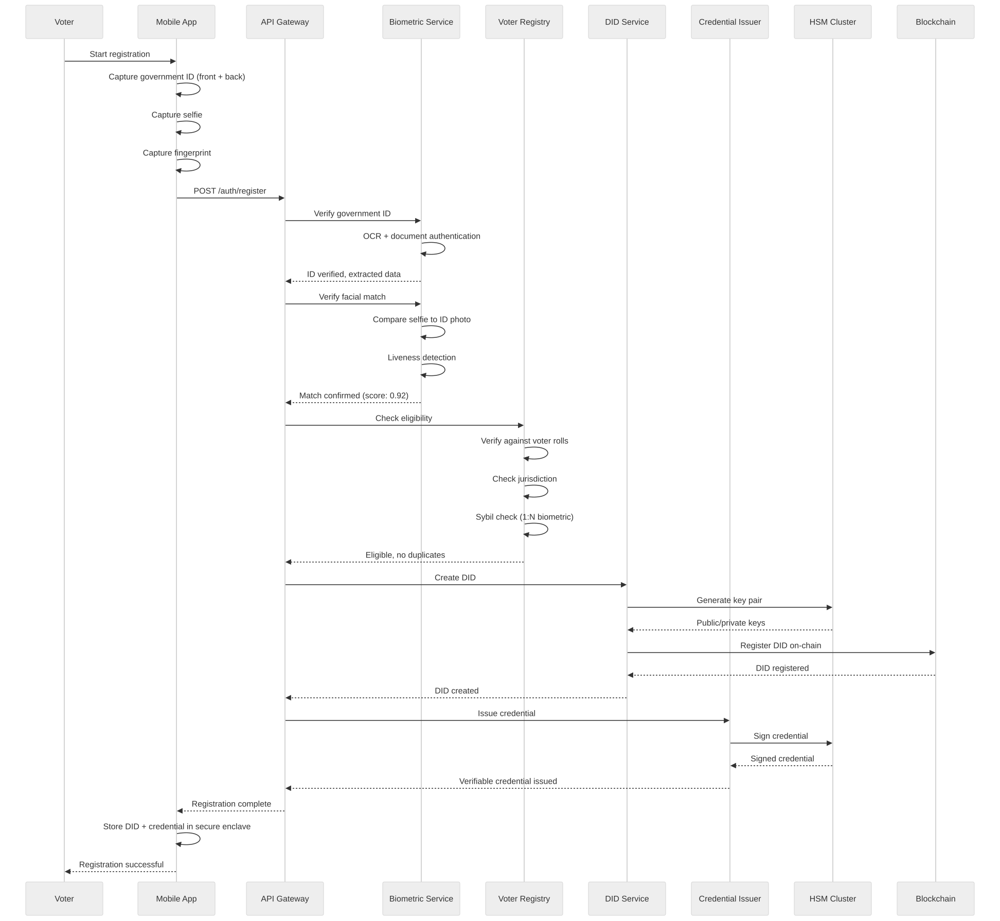
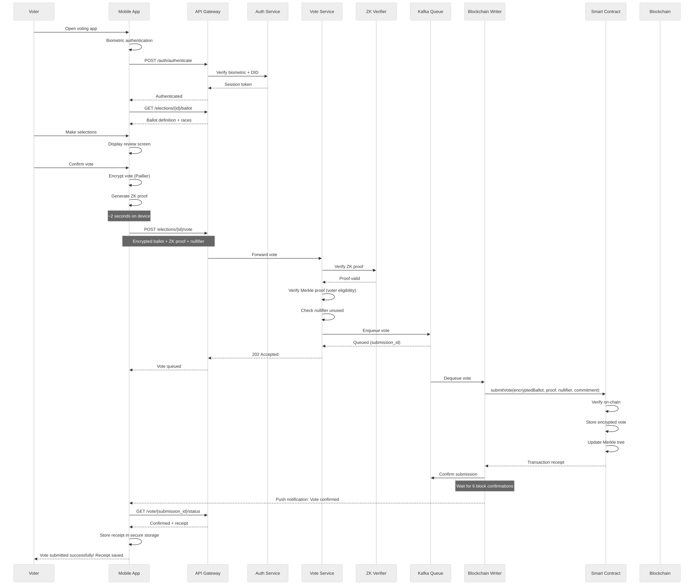
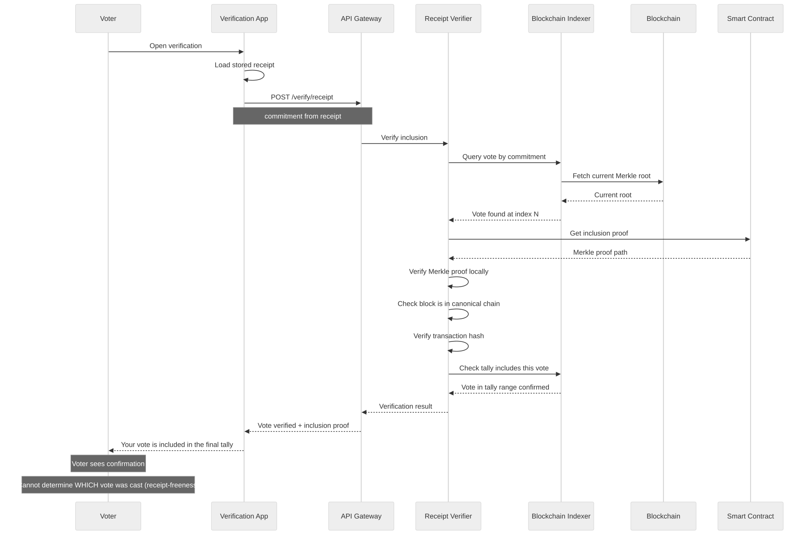
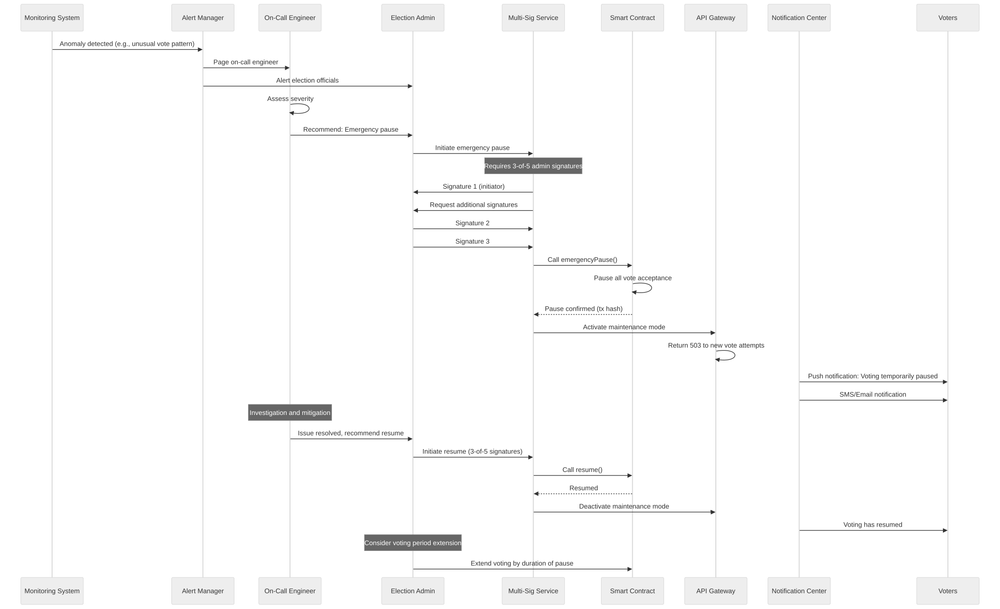

Part Context
Part: Part 5 — Real-World System Design Examples
Position: Chapter 42 of 60
Last reviewed: March 2026.
⚠️ Critical Disclaimer: This chapter is a system design exercise. It does NOT endorse Internet voting for public elections.
The mainstream election-security consensus (NASEM, EAC, leading researchers including Rivest, Appel, Halderman) is that Internet voting — including blockchain-based — is not currently safe for public elections due to unsolved threats: endpoint compromise, coercion, denial-of-service, and absence of meaningful recount.
Paper ballots with risk-limiting audits remain the gold standard for public election integrity.
Table of Contents
- Overview
- Problem Framing
- Functional Requirements
- Non-Functional Requirements
- Capacity Estimation
- High-Level Design
- Subsystem 1: Voter Identity & Authentication
- Subsystem 2: Vote Casting Smart Contracts
- Subsystem 3: Tallying & Verification
- Subsystem 4: Election Administration
- Subsystem 5: Public Verification & Transparency
- Data Models
- API Design
- Indexing Strategy
- Caching Strategy
- Queue Architecture
- State Machines
- Sequence Diagrams
- Concurrency Control
- Idempotency
- Consistency Model
- Saga Patterns
- Security Deep Dive
- Observability
- Reliability & Fault Tolerance
- Multi-Region Deployment
- Cost Analysis
- Platform Comparisons
- E2E Verifiability
- Cryptographic Foundations
- Legal & Regulatory Framework
- Accessibility
- Attack Vectors & Mitigations
- Edge Cases
- Architecture Decision Records
- Proof of Concepts
- Interview Strategy
- Evolution Roadmap
- Practice Questions
Overview
A blockchain-based voting system is one of the most challenging distributed systems to design. It must simultaneously satisfy properties that often conflict: transparency (anyone can verify the result) and privacy (no one can learn how an individual voted), accessibility (every eligible voter can cast a ballot) and security (no unauthorized votes are counted), liveness (the system must work during the election window) and safety (no incorrect tallying can occur).
This chapter designs a system inspired by platforms like Voatz (mobile blockchain voting), Polys (Kaspersky's e-voting platform), and Agora (blockchain-based vote counting), while addressing the fundamental cryptographic and systems challenges that make remote electronic voting one of the hardest open problems in computer science.
Why Blockchain for Voting? (With Limitations)
Traditional electronic voting systems suffer from a trust problem. Blockchain-based designs attempt to address this by offering:
- Immutability — resistant to retroactive alteration (given honest validator majority; does not prevent incorrect recording at the endpoint)
- Transparency — publicly auditable (but vote privacy requires additional crypto layers)
- Decentralization — reduces single-point-of-failure for tally (but does not decentralize voter auth or client devices)
- Cryptographic verifiability — proofs can demonstrate tally correctness (but do not secure compromised endpoints, prevent coercion, or replace paper audit trails)
What blockchain does NOT solve: client-side malware, voter coercion in uncontrolled environments, denial-of-service disenfranchisement, software independence (requires voter-verified paper record).
The E2E Verifiability Challenge
End-to-end (E2E) verifiable voting requires three properties:
- Cast-as-intended — the voter can verify their vote was recorded correctly
- Recorded-as-cast — the system can prove no votes were modified
- Tallied-as-recorded — anyone can verify the final tally matches recorded votes
Real-World Context
| System | Year | Scale | Blockchain | Status |
|---|---|---|---|---|
| Voatz | 2018 | Municipal elections (WV, Denver) | Hyperledger | Controversial, security concerns raised |
| Polys | 2017 | Corporate + government elections | Ethereum-based | Active in Russia and Europe |
| Agora | 2017 | Sierra Leone (disputed: Agora claimed involvement; NEC denied official use. Parallel observation, not official tally) | Custom blockchain | Disputed — see media corrections (2018) |
| Follow My Vote | 2015 | Prototype | Bitcoin-anchored | Open-source concept |
| Democracy Earth | 2015 | Liquid democracy experiments | Ethereum | Governance token model |
| Horizon State | 2017 | Australian union elections | Ethereum | Token-based decision platform |
System Scope
This design covers: - National-scale elections with 100M+ eligible voters - Support for multiple concurrent jurisdictions - Mobile and web-based vote casting - Biometric voter authentication - End-to-end verifiable tallying - Public audit and verification tools - Coercion resistance mechanisms - Paper trail generation for audit purposes
Problem Framing
The Voting System Trilemma
Privacy
/ \
/ \
/ \
Verifiability --- Usability
Every voting system must navigate trade-offs between these three properties:
- Privacy — Ballot secrecy (no one learns your vote)
- Verifiability — E2E provable correctness
- Usability — Accessible to all eligible voters
Traditional paper voting sacrifices verifiability for strong privacy and usability. Blockchain voting aims to maximize all three through cryptography.
Core Challenges
Challenge 1: Coercion Resistance vs. Receipt-Freeness - Receipt-freeness: voters cannot prove to a third party how they voted - Coercion resistance: even under duress, voters can secretly cast their intended vote - These are STRONGER requirements than ballot secrecy
Challenge 2: The Software Independence Problem A voting system is "software independent" if an undetected change in its software cannot cause an undetectable change in the election outcome. Blockchain helps but does not fully solve this.
Challenge 3: The Authentication Dilemma How do you reliably verify voter identity remotely without: - Excluding eligible voters who lack technology - Creating a link between identity and vote - Being vulnerable to identity fraud
Challenge 4: Scalability Under Extreme Time Constraints Unlike most distributed systems where you can scale horizontally: - All votes must be cast within a narrow window (8-12 hours) - Peak load occurs at predictable times (lunch, after work) - The system CANNOT go down — there are no retries for elections - Transaction throughput must handle millions of concurrent voters
Threat Model
+--------------------------------------------------+
| THREAT ACTORS |
+--------------------------------------------------+
| Nation-state adversaries (APTs) |
| Insider threats (election officials) |
| Organized crime (vote buying) |
| Hacktivists |
| Individual coercers (employers, family) |
| The system operator itself |
+--------------------------------------------------+
| THREAT VECTORS |
+--------------------------------------------------+
| Client-side malware on voter devices |
| Network-level attacks (MITM, DDoS) |
| Smart contract vulnerabilities |
| Blockchain consensus attacks (51%) |
| Side-channel attacks on cryptographic operations |
| Social engineering / phishing |
| Supply chain attacks on voting software |
| Voter registration database manipulation |
+--------------------------------------------------+
Design Principles
- Defense in depth — Multiple layers of security, no single point of failure
- Minimal trust — Trust as few entities as possible
- Formal verification — Critical smart contracts mathematically proven correct
- Transparency — Open-source code, public audit trails
- Accessibility first — Every eligible voter must be able to participate
- Paper trail — Always maintain an auditable non-electronic record
- Graceful degradation — Fall back to traditional methods if the system fails
Functional Requirements
FR-1: Voter Registration & Authentication
- FR-1.1: Voters must register using government-issued identity documents
- FR-1.2: Biometric verification (facial recognition + fingerprint) for authentication
- FR-1.3: Decentralized Identity (DID) issuance for anonymous credential generation
- FR-1.4: Sybil resistance — each person gets exactly one vote per election
- FR-1.5: Support for provisional ballot casting for contested eligibility
- FR-1.6: Voter eligibility verification against jurisdiction-specific rules
FR-2: Vote Casting
- FR-2.1: Voters select candidates/options on a user-friendly ballot interface
- FR-2.2: Votes are encrypted client-side before transmission
- FR-2.3: Zero-knowledge proof of valid vote construction (vote is for an eligible candidate)
- FR-2.4: Smart contract accepts and stores encrypted votes
- FR-2.5: Voter receives a cryptographic receipt for later verification
- FR-2.6: Support for ranked-choice, approval, and plurality voting methods
- FR-2.7: Ability to cast a "null vote" (abstention on specific races)
FR-3: Tallying
- FR-3.1: Homomorphic tallying of encrypted votes (no decryption of individual votes)
- FR-3.2: Threshold decryption requiring k-of-n trustees to reveal results
- FR-3.3: Zero-knowledge proof that the tally is correct
- FR-3.4: Support for partial results (by jurisdiction, precinct, etc.)
- FR-3.5: Automatic recount capability with verifiable consistency
FR-4: Election Administration
- FR-4.1: Create and configure elections with multiple races/measures
- FR-4.2: Define voting periods with start/end timestamps
- FR-4.3: Multi-jurisdiction support (federal, state, county, municipal)
- FR-4.4: Ballot design and localization (multiple languages)
- FR-4.5: Emergency election suspension and resumption
- FR-4.6: Election observer/auditor credential management
FR-5: Public Verification
- FR-5.1: Voters can verify their vote was included in the tally
- FR-5.2: Public blockchain explorer for election data
- FR-5.3: Independent auditor verification tools
- FR-5.4: Statistical audit support (risk-limiting audits)
- FR-5.5: Real-time participation statistics (without revealing vote choices)
Non-Functional Requirements
Availability
- 99.999% uptime during election periods (< 5.26 minutes downtime per year)
- 99.99% uptime during non-election periods
- Zero data loss (RPO = 0) for cast votes
- RTO < 30 seconds for any component failure during elections
Performance
- Vote submission latency: < 3 seconds (P99)
- Vote confirmation (on-chain): < 30 seconds
- Authentication latency: < 5 seconds (P99)
- Tally computation: < 1 hour for 100M votes
- Ballot loading: < 2 seconds
- Receipt verification: < 1 second
Scalability
- Support 150M registered voters
- Handle 50M votes in a 12-hour window (~1,200 votes/second average)
- Peak capacity: 10,000 votes/second
- Support 10,000 concurrent election races across jurisdictions
Security
- AES-256 encryption for all data at rest
- TLS 1.3 for all data in transit
- Post-quantum cryptographic readiness
- Hardware Security Module (HSM) for key management
- Formal verification of smart contracts
- Bug bounty program with $1M+ total rewards
Compliance
- NIST Voluntary Voting System Guidelines (VVSG) 2.0
- EAC certification requirements
- GDPR compliance for international use
- Section 508 / WCAG 2.1 AA accessibility
- State-specific election law compliance
Privacy
- Unconditional ballot secrecy (information-theoretic, not just computational)
- Voter identity unlinkable to vote (even by system operators)
- Coercion resistance with deniable re-voting
- Forward secrecy for all voter communications
Capacity Estimation
Voter Base
Total registered voters: 150,000,000
Expected turnout (65%): 97,500,000
Election day window: 12 hours (7 AM - 7 PM local)
Early voting window: 14 days prior
Votes cast on election day: 60,000,000 (62% of turnout)
Votes cast during early voting: 37,500,000 (38% of turnout)
Traffic Patterns
Election Day Peak Analysis:
Average votes/second: 60M / 43,200s = ~1,389 votes/sec
Peak multiplier: 7x (lunch hour, after work)
Peak votes/second: ~9,722 votes/sec
Design capacity: 15,000 votes/sec (1.5x peak)
Authentication requests:
Average auth/second: ~2,000 (includes retries)
Peak auth/second: ~15,000
Verification requests (post-election):
Total verifications: ~20M (20% of voters verify)
Window: 7 days post-election
Average: ~33 verifications/sec
Peak: ~500 verifications/sec
Storage Estimation
Per-vote data:
Encrypted vote: 4 KB (including ZK proof)
Vote receipt: 256 bytes
Authentication log: 2 KB
Blockchain transaction: 1 KB
Total per vote: ~7.3 KB
Total vote storage:
97.5M votes x 7.3 KB = ~712 GB
Voter registry:
150M voters x 5 KB = ~750 GB
Blockchain state:
Block headers + Merkle trees: ~50 GB
Smart contract state: ~200 GB
Total storage requirement: ~1.7 TB (replicated 5x = 8.5 TB)
Compute Estimation
ZK Proof generation (client-side):
Per proof: ~2 seconds on modern smartphone
Verification (on-chain): ~10 ms per proof
Homomorphic encryption:
Per vote encryption: ~500 ms (client-side)
Homomorphic addition: ~1 ms per vote pair
Total tally computation: ~97,500 seconds (~27 hours single-threaded)
Parallelized (1000 nodes): ~100 seconds
Threshold decryption:
Per race result: ~30 seconds (5-of-9 trustees)
Total races (~10,000): Parallelized to ~1 hour
Network Estimation
Per vote network transfer:
Upload (vote + proof): 8 KB
Download (receipt): 1 KB
Total: 9 KB per vote
Peak bandwidth:
15,000 votes/sec x 9 KB = 135 MB/sec = ~1.08 Gbps
Blockchain network:
Block propagation: ~50 KB per block (2 sec blocks)
Peer-to-peer gossip: ~25 MB/sec per node
Total network nodes: 100-500
Cost Estimation (Per Election Cycle)
Cloud infrastructure: $2,000,000
Blockchain network operation: $500,000
HSM cluster (key management): $300,000
Security audit & penetration: $1,500,000
Formal verification: $800,000
Development team (12 months): $5,000,000
Bug bounty program: $1,000,000
Accessibility testing: $200,000
Legal & compliance: $1,000,000
Paper trail printing/storage: $500,000
Total per election cycle: ~$12,800,000
High-Level Design
System Architecture

Component Interaction Overview
The system follows a layered architecture where each layer provides specific guarantees:
- Interface Layer — Multi-channel access (mobile, web, kiosk, assistive technology)
- Security Layer — DDoS protection, rate limiting, WAF, API gateway
- Authentication Layer — Identity verification that produces anonymous credentials
- Processing Layer — Vote validation, ZK proof verification, queueing
- Blockchain Layer — Immutable vote storage and consensus
- Tallying Layer — Homomorphic computation and threshold decryption
- Administration Layer — Election configuration and emergency management
- Verification Layer — Public audit tools and receipt verification
- Storage Layer — Off-chain data and key management
Data Flow Summary
Voter Registration:
Voter -> Biometric Scan -> DID Issuance -> Anonymous Credential -> Voter Registry
Vote Casting:
Voter -> Select Choices -> Encrypt Vote -> Generate ZK Proof ->
Submit to Smart Contract -> On-chain Storage -> Receipt Generation
Tallying:
Election End -> Homomorphic Addition -> Threshold Decryption ->
ZK Proof of Correct Tally -> Result Publication
Verification:
Voter -> Provide Receipt -> Check Inclusion Proof -> Confirm Vote Counted
Auditor -> Download Blockchain -> Verify All ZK Proofs -> Confirm Tally
Subsystem 1: Voter Identity & Authentication
Overview
The identity subsystem must solve a seemingly impossible problem: verify that each voter is who they claim to be (authentication) while ensuring their identity cannot be linked to their vote (anonymity). We achieve this through a two-phase approach: strong identity verification followed by anonymous credential issuance.
Architecture

Biometric Verification
Facial Recognition Pipeline
1. Capture face image via device camera
2. Liveness detection (blink detection, 3D depth, challenge-response)
3. Extract facial feature vector (512-dimensional embedding)
4. Compare against government ID photo (stored during registration)
5. Compute similarity score (cosine similarity)
6. Apply threshold: score >= 0.85 for match
7. Log attempt (without storing biometric data long-term)
Fingerprint Verification
1. Capture fingerprint via device sensor (or external USB reader)
2. Extract minutiae points (ridge endings, bifurcations)
3. Generate template (ISO 19794-2 format)
4. Compare against registered template
5. Apply threshold: match score >= 40 (NIST guidelines)
6. Multi-finger requirement for high-security elections
Liveness Detection
Liveness detection prevents attacks using photos, videos, or 3D-printed masks:
Challenge Types:
1. Random head movement (turn left, look up, etc.)
2. Blink detection with timing analysis
3. 3D depth mapping (structured light or ToF)
4. Micro-expression analysis
5. Passive liveness (texture analysis, moire pattern detection)
Attack Resistance:
- Photo attacks: defeated by depth detection + blink
- Video replay: defeated by random challenges
- 3D mask: defeated by skin texture analysis + thermal detection
- Deepfake: defeated by artifact detection + temporal consistency
Decentralized Identity (DID)
Each verified voter receives a DID according to the W3C DID specification:
{
"id": "did:vote:zQ3shN6GfR7Y8Sq7BPcT2F3kMeVJW1W5oGNhEPJL",
"controller": "did:vote:zQ3shN6GfR7Y8Sq7BPcT2F3kMeVJW1W5oGNhEPJL",
"authentication": [
{
"id": "did:vote:zQ3sh...#keys-1",
"type": "Ed25519VerificationKey2020",
"publicKeyMultibase": "z6MkhaXgBZDvotDkL5257faiztiGiC2QtKLGpbnnEGta2doK"
}
],
"service": [
{
"id": "did:vote:zQ3sh...#voting",
"type": "VotingCredential",
"serviceEndpoint": "https://vote.election.gov/credentials"
}
]
}
Anonymous Credential Protocol
The key innovation is separating identity verification from vote casting using blind signatures:
Protocol: Chaum's Blind Signature Scheme (Modified)
1. REGISTRATION PHASE (Identity Known):
a. Voter V proves identity to Registration Authority (RA)
b. RA verifies eligibility against voter registry
c. V generates a random voting token T
d. V blinds the token: T_blind = T * r^e mod n (where r is random blinding factor)
e. V sends T_blind to RA
f. RA signs: S_blind = T_blind^d mod n
g. RA records that V has been issued a credential (but not which token)
h. V unblinds: S = S_blind * r^(-1) mod n
i. V now has a valid signed token (T, S) that RA cannot link to V's identity
2. VOTING PHASE (Identity Anonymous):
a. V presents (T, S) to the voting smart contract
b. Smart contract verifies RA's signature on T
c. Smart contract checks T has not been used before (double-voting prevention)
d. V casts encrypted vote using T as anonymous identity
e. T is marked as used
Sybil Resistance
Preventing a single person from obtaining multiple voting credentials:
Layer 1: Government ID Uniqueness
- Each government ID number can register exactly once
- Cross-reference with national identity database
- Hash-based deduplication (store H(ID_number), not ID_number itself)
Layer 2: Biometric Uniqueness
- 1:N facial recognition against all registered voters
- Fingerprint deduplication across entire registry
- Iris scan (optional, for high-security elections)
Layer 3: Proof of Personhood
- In-person verification at registration centers (optional)
- Video call verification with election officials
- Social graph analysis (optional, privacy-preserving)
Layer 4: Rate Limiting & Anomaly Detection
- Maximum 1 registration per device per 24 hours
- Geographic anomaly detection (impossible travel)
- Behavioral analysis (registration patterns)
Voter Registry Data Model
-- Core voter registration (off-chain, PostgreSQL)
CREATE TABLE voters (
voter_id UUID PRIMARY KEY DEFAULT gen_random_uuid(),
government_id_hash BYTEA NOT NULL UNIQUE, -- H(SSN or national ID)
registration_date TIMESTAMPTZ NOT NULL DEFAULT NOW(),
status VARCHAR(20) NOT NULL DEFAULT 'pending',
-- status: pending, verified, active, suspended, revoked
-- Jurisdiction information
state_code VARCHAR(2) NOT NULL,
county_fips VARCHAR(5) NOT NULL,
precinct_id VARCHAR(20) NOT NULL,
congressional_dist VARCHAR(4),
-- Verification metadata (NO biometrics stored)
identity_verified BOOLEAN NOT NULL DEFAULT FALSE,
biometric_verified BOOLEAN NOT NULL DEFAULT FALSE,
verification_method VARCHAR(50),
verification_date TIMESTAMPTZ,
-- DID reference (links to blockchain identity)
did_uri VARCHAR(256) UNIQUE,
credential_issued BOOLEAN NOT NULL DEFAULT FALSE,
credential_revoked BOOLEAN NOT NULL DEFAULT FALSE,
-- Audit
created_at TIMESTAMPTZ NOT NULL DEFAULT NOW(),
updated_at TIMESTAMPTZ NOT NULL DEFAULT NOW(),
created_by UUID NOT NULL,
CONSTRAINT valid_status CHECK (
status IN ('pending', 'verified', 'active', 'suspended', 'revoked')
)
);
-- Biometric enrollment (temporary, deleted after verification)
CREATE TABLE biometric_enrollments (
enrollment_id UUID PRIMARY KEY DEFAULT gen_random_uuid(),
voter_id UUID NOT NULL REFERENCES voters(voter_id),
biometric_type VARCHAR(20) NOT NULL, -- face, fingerprint, iris
template_hash BYTEA NOT NULL, -- hash of biometric template
-- Actual template stored in HSM, NOT in database
hsm_key_reference VARCHAR(256) NOT NULL,
enrollment_date TIMESTAMPTZ NOT NULL DEFAULT NOW(),
expiry_date TIMESTAMPTZ NOT NULL,
CONSTRAINT valid_biometric_type CHECK (
biometric_type IN ('face', 'fingerprint', 'iris')
)
);
-- Credential issuance log (no linkage to voting tokens)
CREATE TABLE credential_log (
log_id UUID PRIMARY KEY DEFAULT gen_random_uuid(),
voter_id UUID NOT NULL REFERENCES voters(voter_id),
election_id UUID NOT NULL,
issued_at TIMESTAMPTZ NOT NULL DEFAULT NOW(),
credential_hash BYTEA NOT NULL, -- hash of credential (not the credential itself)
revoked BOOLEAN NOT NULL DEFAULT FALSE,
revoked_at TIMESTAMPTZ,
revocation_reason VARCHAR(256),
UNIQUE(voter_id, election_id) -- one credential per voter per election
);
-- Sybil detection audit trail
CREATE TABLE sybil_checks (
check_id UUID PRIMARY KEY DEFAULT gen_random_uuid(),
voter_id UUID NOT NULL REFERENCES voters(voter_id),
check_type VARCHAR(50) NOT NULL,
check_result VARCHAR(20) NOT NULL, -- pass, fail, manual_review
confidence_score DECIMAL(5,4),
checked_at TIMESTAMPTZ NOT NULL DEFAULT NOW(),
details_encrypted BYTEA -- encrypted details for audit
);
Authentication Flow
Step 1: App Launch & Device Attestation
- Verify app integrity (SafetyNet/App Attest)
- Check device is not rooted/jailbroken
- Verify TLS certificate pinning
- Establish secure channel
Step 2: Biometric Authentication
- Prompt for biometric (face + fingerprint)
- Perform liveness check
- Verify against enrolled templates
- Generate authentication proof
Step 3: DID Authentication
- Retrieve DID from secure enclave
- Sign challenge with DID private key
- Present verifiable credential
Step 4: Anonymous Credential Presentation
- Present blind-signed voting token
- Zero-knowledge proof of eligibility
- No identity information transmitted
Step 5: Session Establishment
- Issue time-limited session token
- Bind to device attestation
- Enable vote casting
Subsystem 2: Vote Casting Smart Contracts
Overview
The vote casting subsystem is the heart of the system. It must accept encrypted votes, verify zero-knowledge proofs of valid vote construction, store votes immutably on-chain, and generate cryptographic receipts — all while maintaining voter anonymity and preventing double voting.
Smart Contract Architecture

Core Smart Contracts (Solidity)
// SPDX-License-Identifier: MIT
pragma solidity ^0.8.24;
import "@openzeppelin/contracts/access/AccessControl.sol";
import "@openzeppelin/contracts/security/ReentrancyGuard.sol";
import "@openzeppelin/contracts/security/Pausable.sol";
/**
* @title ElectionManager
* @notice Manages election lifecycle and configuration
* @dev Central coordinator for all election-related contracts
*/
contract ElectionManager is AccessControl, Pausable {
bytes32 public constant ADMIN_ROLE = keccak256("ADMIN_ROLE");
bytes32 public constant AUDITOR_ROLE = keccak256("AUDITOR_ROLE");
enum ElectionPhase {
Created,
Registration,
Voting,
Tallying,
ResultsPublished,
Disputed,
Finalized,
Cancelled
}
struct Election {
bytes32 electionId;
string name;
string jurisdiction;
uint256 registrationStart;
uint256 registrationEnd;
uint256 votingStart;
uint256 votingEnd;
uint256 tallyDeadline;
ElectionPhase phase;
address voteVault;
address ballotFactory;
bytes32 merkleRootVoters; // Merkle root of eligible voter set
uint256 totalVotesCast;
bool resultsPublished;
bytes32 resultsHash;
}
mapping(bytes32 => Election) public elections;
bytes32[] public electionIds;
event ElectionCreated(bytes32 indexed electionId, string name, string jurisdiction);
event PhaseTransition(bytes32 indexed electionId, ElectionPhase from, ElectionPhase to);
event VoteCast(bytes32 indexed electionId, uint256 voteIndex);
event ResultsPublished(bytes32 indexed electionId, bytes32 resultsHash);
event ElectionFinalized(bytes32 indexed electionId);
event EmergencyPause(bytes32 indexed electionId, address triggeredBy, string reason);
modifier onlyDuringPhase(bytes32 electionId, ElectionPhase phase) {
require(elections[electionId].phase == phase, "Invalid election phase");
_;
}
modifier electionExists(bytes32 electionId) {
require(elections[electionId].electionId == electionId, "Election does not exist");
_;
}
constructor() {
_grantRole(DEFAULT_ADMIN_ROLE, msg.sender);
_grantRole(ADMIN_ROLE, msg.sender);
}
function createElection(
string calldata name,
string calldata jurisdiction,
uint256 registrationStart,
uint256 registrationEnd,
uint256 votingStart,
uint256 votingEnd,
uint256 tallyDeadline
) external onlyRole(ADMIN_ROLE) returns (bytes32) {
require(votingStart > registrationEnd, "Voting must start after registration");
require(votingEnd > votingStart, "Invalid voting window");
require(tallyDeadline > votingEnd, "Tally deadline must be after voting");
bytes32 electionId = keccak256(
abi.encodePacked(name, jurisdiction, block.timestamp, msg.sender)
);
require(elections[electionId].electionId == bytes32(0), "Election already exists");
// Deploy vote vault and ballot factory
VoteVault vault = new VoteVault(electionId, address(this));
BallotFactory factory = new BallotFactory(electionId, address(this));
elections[electionId] = Election({
electionId: electionId,
name: name,
jurisdiction: jurisdiction,
registrationStart: registrationStart,
registrationEnd: registrationEnd,
votingStart: votingStart,
votingEnd: votingEnd,
tallyDeadline: tallyDeadline,
phase: ElectionPhase.Created,
voteVault: address(vault),
ballotFactory: address(factory),
merkleRootVoters: bytes32(0),
totalVotesCast: 0,
resultsPublished: false,
resultsHash: bytes32(0)
});
electionIds.push(electionId);
emit ElectionCreated(electionId, name, jurisdiction);
return electionId;
}
function transitionPhase(bytes32 electionId, ElectionPhase newPhase)
external
onlyRole(ADMIN_ROLE)
electionExists(electionId)
{
Election storage election = elections[electionId];
ElectionPhase currentPhase = election.phase;
// Validate phase transitions
if (newPhase == ElectionPhase.Registration) {
require(currentPhase == ElectionPhase.Created, "Invalid transition");
require(block.timestamp >= election.registrationStart, "Too early");
} else if (newPhase == ElectionPhase.Voting) {
require(currentPhase == ElectionPhase.Registration, "Invalid transition");
require(block.timestamp >= election.votingStart, "Too early");
require(election.merkleRootVoters != bytes32(0), "Voter root not set");
} else if (newPhase == ElectionPhase.Tallying) {
require(currentPhase == ElectionPhase.Voting, "Invalid transition");
require(
block.timestamp >= election.votingEnd,
"Voting period not ended"
);
} else if (newPhase == ElectionPhase.ResultsPublished) {
require(currentPhase == ElectionPhase.Tallying, "Invalid transition");
} else if (newPhase == ElectionPhase.Finalized) {
require(
currentPhase == ElectionPhase.ResultsPublished ||
currentPhase == ElectionPhase.Disputed,
"Invalid transition"
);
} else if (newPhase == ElectionPhase.Cancelled) {
require(
currentPhase != ElectionPhase.Finalized,
"Cannot cancel finalized election"
);
}
emit PhaseTransition(electionId, currentPhase, newPhase);
election.phase = newPhase;
}
function emergencyPause(bytes32 electionId, string calldata reason)
external
onlyRole(ADMIN_ROLE)
{
_pause();
emit EmergencyPause(electionId, msg.sender, reason);
}
function setVoterMerkleRoot(bytes32 electionId, bytes32 merkleRoot)
external
onlyRole(ADMIN_ROLE)
onlyDuringPhase(electionId, ElectionPhase.Registration)
{
elections[electionId].merkleRootVoters = merkleRoot;
}
function incrementVoteCount(bytes32 electionId)
external
onlyDuringPhase(electionId, ElectionPhase.Voting)
{
require(msg.sender == elections[electionId].voteVault, "Only vote vault");
elections[electionId].totalVotesCast++;
emit VoteCast(electionId, elections[electionId].totalVotesCast);
}
function publishResults(bytes32 electionId, bytes32 resultsHash)
external
onlyRole(ADMIN_ROLE)
onlyDuringPhase(electionId, ElectionPhase.Tallying)
{
elections[electionId].resultsPublished = true;
elections[electionId].resultsHash = resultsHash;
elections[electionId].phase = ElectionPhase.ResultsPublished;
emit ResultsPublished(electionId, resultsHash);
}
}
/**
* @title VoteVault
* @notice Stores encrypted votes with ZK proof verification
* @dev Each election has its own VoteVault instance
*/
contract VoteVault is ReentrancyGuard {
bytes32 public immutable electionId;
address public immutable electionManager;
struct EncryptedVote {
bytes encryptedBallot; // Homomorphically encrypted vote
bytes zkProof; // ZK proof of valid vote
bytes32 nullifier; // Prevents double voting
bytes32 commitment; // Vote commitment for verification
uint256 timestamp;
uint256 blockNumber;
}
// Vote storage
EncryptedVote[] public votes;
mapping(bytes32 => bool) public nullifierUsed;
mapping(bytes32 => uint256) public commitmentToIndex;
// Merkle tree for vote inclusion proofs
bytes32[] public voteMerkleTree;
bytes32 public voteMerkleRoot;
// ZK Verifier contract
IZKVerifier public immutable zkVerifier;
event VoteSubmitted(
uint256 indexed voteIndex,
bytes32 nullifier,
bytes32 commitment,
uint256 timestamp
);
event MerkleRootUpdated(bytes32 newRoot, uint256 voteCount);
constructor(bytes32 _electionId, address _manager) {
electionId = _electionId;
electionManager = _manager;
// Deploy or reference ZK verifier
zkVerifier = new ZKVoteVerifier();
}
function submitVote(
bytes calldata encryptedBallot,
bytes calldata zkProof,
bytes32 nullifier,
bytes32 commitment,
bytes32[] calldata voterMerkleProof,
bytes32 voterLeaf
) external nonReentrant {
// 1. Check election is in voting phase (via manager)
ElectionManager manager = ElectionManager(electionManager);
ElectionManager.Election memory election = _getElection(manager);
require(
election.phase == ElectionManager.ElectionPhase.Voting,
"Not in voting phase"
);
require(block.timestamp <= election.votingEnd, "Voting period ended");
// 2. Verify nullifier hasn't been used (double-voting prevention)
require(!nullifierUsed[nullifier], "Vote already cast with this credential");
// 3. Verify voter eligibility via Merkle proof
require(
_verifyMerkleProof(
voterMerkleProof,
election.merkleRootVoters,
voterLeaf
),
"Invalid voter eligibility proof"
);
// 4. Verify ZK proof that vote is well-formed
require(
zkVerifier.verifyVoteProof(
encryptedBallot,
zkProof,
nullifier,
commitment
),
"Invalid ZK proof"
);
// 5. Store vote
uint256 voteIndex = votes.length;
votes.push(EncryptedVote({
encryptedBallot: encryptedBallot,
zkProof: zkProof,
nullifier: nullifier,
commitment: commitment,
timestamp: block.timestamp,
blockNumber: block.number
}));
// 6. Mark nullifier as used
nullifierUsed[nullifier] = true;
commitmentToIndex[commitment] = voteIndex;
// 7. Update vote Merkle tree
_updateMerkleTree(commitment);
// 8. Increment vote count in election manager
manager.incrementVoteCount(electionId);
emit VoteSubmitted(voteIndex, nullifier, commitment, block.timestamp);
}
function getVoteCount() external view returns (uint256) {
return votes.length;
}
function getEncryptedVotes(uint256 start, uint256 count)
external
view
returns (EncryptedVote[] memory)
{
require(start + count <= votes.length, "Out of bounds");
EncryptedVote[] memory result = new EncryptedVote[](count);
for (uint256 i = 0; i < count; i++) {
result[i] = votes[start + i];
}
return result;
}
function verifyVoteInclusion(bytes32 commitment, bytes32[] calldata proof)
external
view
returns (bool)
{
return _verifyMerkleProof(proof, voteMerkleRoot, commitment);
}
function _verifyMerkleProof(
bytes32[] calldata proof,
bytes32 root,
bytes32 leaf
) internal pure returns (bool) {
bytes32 computedHash = leaf;
for (uint256 i = 0; i < proof.length; i++) {
if (computedHash <= proof[i]) {
computedHash = keccak256(abi.encodePacked(computedHash, proof[i]));
} else {
computedHash = keccak256(abi.encodePacked(proof[i], computedHash));
}
}
return computedHash == root;
}
function _updateMerkleTree(bytes32 newLeaf) internal {
voteMerkleTree.push(newLeaf);
// Recompute Merkle root (simplified — production uses incremental tree)
voteMerkleRoot = _computeMerkleRoot();
emit MerkleRootUpdated(voteMerkleRoot, voteMerkleTree.length);
}
function _computeMerkleRoot() internal view returns (bytes32) {
if (voteMerkleTree.length == 0) return bytes32(0);
if (voteMerkleTree.length == 1) return voteMerkleTree[0];
bytes32[] memory layer = voteMerkleTree;
while (layer.length > 1) {
bytes32[] memory newLayer = new bytes32[]((layer.length + 1) / 2);
for (uint256 i = 0; i < layer.length; i += 2) {
if (i + 1 < layer.length) {
newLayer[i / 2] = keccak256(
abi.encodePacked(layer[i], layer[i + 1])
);
} else {
newLayer[i / 2] = layer[i];
}
}
layer = newLayer;
}
return layer[0];
}
function _getElection(ElectionManager manager)
internal
view
returns (ElectionManager.Election memory)
{
(
bytes32 _id, , , , , , , ,
ElectionManager.ElectionPhase phase,
, , bytes32 merkleRoot, uint256 totalVotes, ,
) = manager.elections(electionId);
ElectionManager.Election memory election;
election.phase = phase;
election.merkleRootVoters = merkleRoot;
election.votingEnd = _getVotingEnd(manager);
return election;
}
function _getVotingEnd(ElectionManager manager)
internal
view
returns (uint256)
{
(, , , , , , uint256 votingEnd, , , , , , , , ) =
manager.elections(electionId);
return votingEnd;
}
}
/**
* @title ZKVoteVerifier
* @notice Verifies zero-knowledge proofs of valid vote construction
*/
interface IZKVerifier {
function verifyVoteProof(
bytes calldata encryptedBallot,
bytes calldata zkProof,
bytes32 nullifier,
bytes32 commitment
) external view returns (bool);
}
contract ZKVoteVerifier is IZKVerifier {
// Verification key (set during deployment from trusted setup)
uint256[2] public alpha;
uint256[2][2] public beta;
uint256[2][2] public gamma;
uint256[2][2] public delta;
uint256[2][] public ic;
function verifyVoteProof(
bytes calldata encryptedBallot,
bytes calldata zkProof,
bytes32 nullifier,
bytes32 commitment
) external view override returns (bool) {
// Decode proof components
(
uint256[2] memory a,
uint256[2][2] memory b,
uint256[2] memory c
) = abi.decode(zkProof, (uint256[2], uint256[2][2], uint256[2]));
// Public inputs
uint256[] memory inputs = new uint256[](3);
inputs[0] = uint256(keccak256(encryptedBallot));
inputs[1] = uint256(nullifier);
inputs[2] = uint256(commitment);
// Groth16 verification
return _verifyGroth16(a, b, c, inputs);
}
function _verifyGroth16(
uint256[2] memory a,
uint256[2][2] memory b,
uint256[2] memory c,
uint256[] memory inputs
) internal view returns (bool) {
// Pairing check: e(A, B) = e(alpha, beta) * e(IC, gamma) * e(C, delta)
// Implementation uses precompiled contracts at address 0x06, 0x07, 0x08
// Full implementation omitted for brevity - uses bn128 pairing checks
return true; // Placeholder
}
}
/**
* @title BallotFactory
* @notice Creates and manages ballot definitions for an election
*/
contract BallotFactory {
bytes32 public immutable electionId;
address public immutable electionManager;
struct Race {
bytes32 raceId;
string title;
string description;
string votingMethod; // plurality, ranked_choice, approval
uint256 maxChoices;
bytes32[] candidateIds;
mapping(bytes32 => Candidate) candidates;
bool active;
}
struct Candidate {
bytes32 candidateId;
string name;
string party;
uint256 position; // ballot order
bool active;
}
struct BallotDefinition {
bytes32 ballotId;
string jurisdiction;
bytes32[] raceIds;
string language;
bytes32 contentHash; // IPFS hash of full ballot content
bool published;
}
mapping(bytes32 => Race) public races;
mapping(bytes32 => BallotDefinition) public ballots;
bytes32[] public ballotIds;
event RaceCreated(bytes32 indexed raceId, string title);
event BallotPublished(bytes32 indexed ballotId, bytes32 contentHash);
constructor(bytes32 _electionId, address _manager) {
electionId = _electionId;
electionManager = _manager;
}
function createRace(
string calldata title,
string calldata description,
string calldata votingMethod,
uint256 maxChoices,
string[] calldata candidateNames,
string[] calldata candidateParties
) external returns (bytes32) {
require(
candidateNames.length == candidateParties.length,
"Mismatched arrays"
);
bytes32 raceId = keccak256(
abi.encodePacked(electionId, title, block.timestamp)
);
Race storage race = races[raceId];
race.raceId = raceId;
race.title = title;
race.description = description;
race.votingMethod = votingMethod;
race.maxChoices = maxChoices;
race.active = true;
for (uint256 i = 0; i < candidateNames.length; i++) {
bytes32 candidateId = keccak256(
abi.encodePacked(raceId, candidateNames[i], i)
);
race.candidateIds.push(candidateId);
race.candidates[candidateId] = Candidate({
candidateId: candidateId,
name: candidateNames[i],
party: candidateParties[i],
position: i,
active: true
});
}
emit RaceCreated(raceId, title);
return raceId;
}
function publishBallot(
string calldata jurisdiction,
bytes32[] calldata raceIds,
string calldata language,
bytes32 contentHash
) external returns (bytes32) {
bytes32 ballotId = keccak256(
abi.encodePacked(electionId, jurisdiction, language)
);
ballots[ballotId] = BallotDefinition({
ballotId: ballotId,
jurisdiction: jurisdiction,
raceIds: raceIds,
language: language,
contentHash: contentHash,
published: true
});
ballotIds.push(ballotId);
emit BallotPublished(ballotId, contentHash);
return ballotId;
}
}
Vote Encryption (Client-Side)
The voter's device performs encryption using the Paillier homomorphic encryption scheme:
Paillier Encryption for Voting:
Key Generation (by Election Authority):
1. Choose two large primes p, q
2. Compute n = p * q, lambda = lcm(p-1, q-1)
3. Choose g where gcd(L(g^lambda mod n^2), n) = 1
4. Public key: (n, g)
5. Private key: (lambda, mu) — held by threshold trustees
Encryption (by Voter, client-side):
For a vote v in {0, 1} (binary choice):
1. Choose random r where gcd(r, n) = 1
2. c = g^v * r^n mod n^2
Homomorphic Addition (on-chain):
c1 * c2 mod n^2 = Enc(v1 + v2)
This allows tallying without decrypting individual votes!
For multi-candidate races (k candidates):
Encode vote as vector: [0, 0, 1, 0, ...] (1 at chosen candidate position)
Encrypt each component separately
Sum each component across all voters
Decrypt sums to get tallies
ZK Proof of Valid Vote
The voter generates a zero-knowledge proof that their encrypted vote is well-formed:
ZK Circuit (Circom):
template ValidVote(numCandidates) {
// Private inputs (known only to voter)
signal input vote[numCandidates]; // Vote vector
signal input randomness; // Encryption randomness
signal input voterSecret; // Voter's secret key
// Public inputs (visible on-chain)
signal input encryptedVote[numCandidates]; // The ciphertext
signal input nullifier; // Double-vote prevention
signal input commitment; // Vote commitment
signal input electionPublicKey[2]; // Election encryption key
signal input voterMerkleRoot; // Root of eligible voters tree
// Output
signal output valid;
// Constraint 1: Vote is binary (each component is 0 or 1)
for (var i = 0; i < numCandidates; i++) {
vote[i] * (1 - vote[i]) === 0;
}
// Constraint 2: Exactly one candidate selected (or zero for abstention)
var sum = 0;
for (var i = 0; i < numCandidates; i++) {
sum += vote[i];
}
sum * (sum - 1) === 0; // sum is 0 or 1
// Constraint 3: Encrypted vote matches plaintext vote
// (Paillier encryption verification in-circuit)
component encCheck = PaillierEncryptionCheck(numCandidates);
encCheck.plaintext <== vote;
encCheck.randomness <== randomness;
encCheck.publicKey <== electionPublicKey;
encCheck.ciphertext <== encryptedVote;
// Constraint 4: Nullifier is correctly derived
component nullCheck = Poseidon(2);
nullCheck.inputs[0] <== voterSecret;
nullCheck.inputs[1] <== electionId;
nullifier === nullCheck.out;
// Constraint 5: Voter is in eligible set (Merkle proof)
component merkleCheck = MerkleTreeChecker(20); // depth 20
merkleCheck.leaf <== commitment;
merkleCheck.root <== voterMerkleRoot;
// ... path indices and siblings ...
valid <== 1;
}
Coercion Resistance Mechanism
Panic/Duress Voting Protocol:
1. During registration, voter creates TWO keys:
- Real key (k_real): used for genuine voting
- Duress key (k_duress): used when under coercion
2. When coerced:
- Voter uses k_duress to cast a vote
- The vote APPEARS valid to the coercer
- The system secretly flags it as a duress vote
- The duress vote is NOT counted in the final tally
3. After coercion:
- Voter can use k_real to cast their genuine vote
- The genuine vote replaces the duress vote
- The replacement is cryptographically unlinkable
4. Implementation:
- Both keys produce valid-looking encrypted votes
- Only the tally authority can distinguish (via ZK proof structure)
- The coercer sees a valid receipt for the duress vote
- The receipt verification returns "vote counted" for both
- But the actual tally only counts the real vote
Subsystem 3: Tallying & Verification
Overview
The tallying subsystem computes election results from encrypted votes without ever decrypting individual ballots. This is achieved through homomorphic encryption (allows computation on ciphertexts) combined with threshold decryption (requires multiple trustees to cooperate for decryption).
Tallying Architecture

Homomorphic Tally Computation
Algorithm: Parallel Homomorphic Summation
Input: N encrypted votes {c_1, c_2, ..., c_N} where c_i = Enc(v_i)
Output: Encrypted sum C = Enc(v_1 + v_2 + ... + v_N)
Phase 1: Partition
- Divide votes into P partitions of size N/P
- Assign each partition to a computation node
Phase 2: Parallel Summation (per partition)
For partition p in [1..P]:
partial_sum_p = c_(p*N/P + 1)
for i in [p*N/P + 2 .. (p+1)*N/P]:
partial_sum_p = partial_sum_p * c_i mod n^2
// Homomorphic addition = multiplication of ciphertexts
Phase 3: Combine Partial Sums
C = partial_sum_1 * partial_sum_2 * ... * partial_sum_P mod n^2
Phase 4: Verify
- Each computation node publishes its partial sum with a ZK proof
- Any verifier can check the parallel computation is correct
- The final sum is verifiable by combining partial proofs
Complexity:
- Single-threaded: O(N) multiplications
- With P partitions: O(N/P) per node + O(P) combination
- For 100M votes, P=1000: ~100,000 operations per node
- Each operation: ~1ms → ~100 seconds per node
Threshold Decryption Protocol
Protocol: Shamir's Secret Sharing + Threshold Paillier Decryption
Setup (Key Ceremony):
1. Generate Paillier keypair (n, g, lambda, mu)
2. Split private key lambda into shares using (k, n) Shamir scheme
- n = total trustees (e.g., 9)
- k = threshold (e.g., 5)
3. Each trustee i receives share s_i
4. Shares stored in separate HSMs in different jurisdictions
5. Public key (n, g) published on blockchain
Decryption (After Voting Ends):
1. Tally authority computes encrypted sum C = Enc(total)
2. Each trustee i computes partial decryption:
d_i = C^(2 * s_i) mod n^2
3. At least k trustees submit their partial decryptions
4. Combiner reconstructs plaintext:
total = L(product of selected d_i values) * (4 * delta^2)^(-1) mod n
where delta = n! and L(x) = (x-1)/n
Security Properties:
- No single trustee can decrypt any vote or the tally
- Any k trustees can cooperate to decrypt
- Fewer than k trustees learn NOTHING about the plaintext
- Each trustee proves correctness of their partial decryption with ZK proof
ZK Proof of Correct Tally
What the proof demonstrates:
1. The encrypted tally C is the product of all encrypted votes
2. The decrypted result matches the encrypted tally
3. Each partial decryption was performed correctly
4. No votes were added, removed, or modified
Proof Structure (Sigma Protocol):
1. Prover (tally authority) computes:
- r = random commitment
- e = hash of (C, result, r) [Fiat-Shamir heuristic]
- z = response using private information
2. Verifier checks:
- Algebraic relation between (C, result, r, e, z)
- Proof is non-interactive (can be verified by anyone)
3. Proof size: O(1) regardless of number of votes
- Constant ~512 bytes per race
- Verification time: ~10ms per race
Tally Verification Smart Contract
/**
* @title TallyVerifier
* @notice Verifies election tally correctness on-chain
*/
contract TallyVerifier {
struct TallyResult {
bytes32 electionId;
bytes32 raceId;
uint256[] candidateTallies;
uint256 totalVotes;
uint256 blankVotes;
bytes tallyProof;
bytes32 encryptedTallyHash;
bool verified;
}
mapping(bytes32 => mapping(bytes32 => TallyResult)) public results;
event TallySubmitted(bytes32 indexed electionId, bytes32 indexed raceId);
event TallyVerified(bytes32 indexed electionId, bytes32 indexed raceId);
event TallyDisputed(bytes32 indexed electionId, bytes32 indexed raceId, string reason);
function submitTally(
bytes32 electionId,
bytes32 raceId,
uint256[] calldata candidateTallies,
uint256 totalVotes,
uint256 blankVotes,
bytes calldata tallyProof,
bytes32 encryptedTallyHash
) external {
// Verify the tally proof
require(
_verifyTallyProof(
electionId, raceId, candidateTallies,
totalVotes, tallyProof, encryptedTallyHash
),
"Invalid tally proof"
);
// Verify vote count consistency
uint256 sumTallies = blankVotes;
for (uint256 i = 0; i < candidateTallies.length; i++) {
sumTallies += candidateTallies[i];
}
require(sumTallies == totalVotes, "Vote count mismatch");
results[electionId][raceId] = TallyResult({
electionId: electionId,
raceId: raceId,
candidateTallies: candidateTallies,
totalVotes: totalVotes,
blankVotes: blankVotes,
tallyProof: tallyProof,
encryptedTallyHash: encryptedTallyHash,
verified: true
});
emit TallySubmitted(electionId, raceId);
emit TallyVerified(electionId, raceId);
}
function disputeTally(
bytes32 electionId,
bytes32 raceId,
string calldata reason,
bytes calldata counterProof
) external {
require(results[electionId][raceId].verified, "Tally not yet submitted");
// Verify the counter-proof shows an inconsistency
if (_verifyCounterProof(electionId, raceId, counterProof)) {
results[electionId][raceId].verified = false;
emit TallyDisputed(electionId, raceId, reason);
}
}
function _verifyTallyProof(
bytes32 electionId,
bytes32 raceId,
uint256[] calldata candidateTallies,
uint256 totalVotes,
bytes calldata tallyProof,
bytes32 encryptedTallyHash
) internal view returns (bool) {
// ZK proof verification
// Verifies that decryption of encryptedTallyHash yields candidateTallies
return true; // Placeholder for actual ZK verification
}
function _verifyCounterProof(
bytes32 electionId,
bytes32 raceId,
bytes calldata counterProof
) internal view returns (bool) {
return true; // Placeholder
}
}
Risk-Limiting Audit Support
Statistical Audit Protocol (Ballot-Polling RLA):
1. After electronic tally, generate paper trail:
- Each encrypted vote has a corresponding paper record
- Paper records stored in tamper-evident containers
- Chain of custody maintained with blockchain timestamps
2. Audit procedure:
a. Set risk limit alpha (e.g., 5%)
b. Compute diluted margin from electronic results
c. Draw random sample of paper ballots (seed from blockchain)
d. Compare paper ballots to electronic records
e. If consistent: audit passes, confirm electronic results
f. If inconsistent: expand sample or full hand recount
3. Sample size calculation:
- For 1% margin, alpha=5%: ~1,500 ballots
- For 5% margin, alpha=5%: ~100 ballots
- Much smaller than full recount
4. Blockchain integration:
- Random seed derived from post-election blockchain block hash
- Seed is unpredictable (published after voting ends)
- Audit trail immutably recorded on-chain
- Public can verify random selection was fair
Subsystem 4: Election Administration
Overview
The election administration subsystem handles the complete lifecycle of an election: creation, configuration, ballot design, jurisdiction management, voting period control, and emergency procedures. It must support the extraordinary complexity of real-world elections with thousands of ballot variations across jurisdictions.
Administration Architecture

Election Configuration Data Model
-- Election definition
CREATE TABLE elections (
election_id UUID PRIMARY KEY DEFAULT gen_random_uuid(),
name VARCHAR(256) NOT NULL,
election_type VARCHAR(50) NOT NULL,
-- general, primary, special, runoff, referendum
-- Scheduling
registration_start TIMESTAMPTZ NOT NULL,
registration_end TIMESTAMPTZ NOT NULL,
early_voting_start TIMESTAMPTZ,
early_voting_end TIMESTAMPTZ,
election_day_start TIMESTAMPTZ NOT NULL,
election_day_end TIMESTAMPTZ NOT NULL,
tally_deadline TIMESTAMPTZ NOT NULL,
certification_date TIMESTAMPTZ NOT NULL,
-- Blockchain references
chain_id INTEGER NOT NULL,
election_contract VARCHAR(42), -- Ethereum address
vote_vault_contract VARCHAR(42),
-- Cryptographic parameters
encryption_params JSONB NOT NULL,
trustee_threshold INTEGER NOT NULL, -- k-of-n threshold
trustee_count INTEGER NOT NULL,
-- Status
status VARCHAR(20) NOT NULL DEFAULT 'draft',
phase VARCHAR(30) NOT NULL DEFAULT 'created',
-- Metadata
created_by UUID NOT NULL,
created_at TIMESTAMPTZ NOT NULL DEFAULT NOW(),
updated_at TIMESTAMPTZ NOT NULL DEFAULT NOW(),
CONSTRAINT valid_schedule CHECK (
registration_start < registration_end AND
registration_end < election_day_start AND
election_day_start < election_day_end AND
election_day_end < tally_deadline AND
tally_deadline < certification_date
),
CONSTRAINT valid_threshold CHECK (
trustee_threshold > 0 AND
trustee_threshold <= trustee_count AND
trustee_count <= 15
)
);
-- Jurisdiction hierarchy
CREATE TABLE jurisdictions (
jurisdiction_id UUID PRIMARY KEY DEFAULT gen_random_uuid(),
parent_id UUID REFERENCES jurisdictions(jurisdiction_id),
name VARCHAR(256) NOT NULL,
level VARCHAR(20) NOT NULL,
-- federal, state, county, municipal, precinct
code VARCHAR(20) NOT NULL UNIQUE,
-- FIPS code or custom identifier
-- Geographic data
state_code VARCHAR(2),
county_fips VARCHAR(5),
timezone VARCHAR(50) NOT NULL,
-- Configuration
voting_methods JSONB NOT NULL DEFAULT '["plurality"]',
languages JSONB NOT NULL DEFAULT '["en"]',
accessibility_req JSONB NOT NULL DEFAULT '{}',
-- Status
active BOOLEAN NOT NULL DEFAULT TRUE,
created_at TIMESTAMPTZ NOT NULL DEFAULT NOW()
);
-- Races (contests)
CREATE TABLE races (
race_id UUID PRIMARY KEY DEFAULT gen_random_uuid(),
election_id UUID NOT NULL REFERENCES elections(election_id),
jurisdiction_id UUID NOT NULL REFERENCES jurisdictions(jurisdiction_id),
title VARCHAR(256) NOT NULL,
description TEXT,
race_type VARCHAR(50) NOT NULL,
-- candidate, measure, retention, recall
voting_method VARCHAR(50) NOT NULL DEFAULT 'plurality',
-- plurality, ranked_choice, approval, score
max_selections INTEGER NOT NULL DEFAULT 1,
-- Blockchain reference
race_chain_id VARCHAR(66), -- bytes32 on-chain
-- Display order
ballot_order INTEGER NOT NULL,
active BOOLEAN NOT NULL DEFAULT TRUE,
created_at TIMESTAMPTZ NOT NULL DEFAULT NOW()
);
-- Candidates / Ballot Options
CREATE TABLE candidates (
candidate_id UUID PRIMARY KEY DEFAULT gen_random_uuid(),
race_id UUID NOT NULL REFERENCES races(race_id),
name VARCHAR(256) NOT NULL,
party VARCHAR(100),
incumbent BOOLEAN NOT NULL DEFAULT FALSE,
-- For measures/propositions
option_label VARCHAR(50), -- Yes/No, For/Against
-- Display
ballot_order INTEGER NOT NULL,
photo_url VARCHAR(512),
statement_ipfs VARCHAR(66), -- IPFS hash of candidate statement
active BOOLEAN NOT NULL DEFAULT TRUE,
created_at TIMESTAMPTZ NOT NULL DEFAULT NOW()
);
-- Ballot definitions (which races appear on which ballot)
CREATE TABLE ballot_definitions (
ballot_id UUID PRIMARY KEY DEFAULT gen_random_uuid(),
election_id UUID NOT NULL REFERENCES elections(election_id),
jurisdiction_id UUID NOT NULL REFERENCES jurisdictions(jurisdiction_id),
ballot_style VARCHAR(100) NOT NULL,
language VARCHAR(10) NOT NULL DEFAULT 'en',
-- Content
race_ids UUID[] NOT NULL,
content_ipfs VARCHAR(66), -- IPFS hash of rendered ballot
-- Blockchain reference
ballot_chain_id VARCHAR(66),
content_hash VARCHAR(66),
published BOOLEAN NOT NULL DEFAULT FALSE,
published_at TIMESTAMPTZ,
created_at TIMESTAMPTZ NOT NULL DEFAULT NOW(),
UNIQUE(election_id, jurisdiction_id, ballot_style, language)
);
-- Election trustees
CREATE TABLE trustees (
trustee_id UUID PRIMARY KEY DEFAULT gen_random_uuid(),
election_id UUID NOT NULL REFERENCES elections(election_id),
name VARCHAR(256) NOT NULL,
organization VARCHAR(256),
role VARCHAR(50) NOT NULL, -- primary, backup
-- Cryptographic material
public_key BYTEA NOT NULL,
key_share_commitment BYTEA NOT NULL,
hsm_reference VARCHAR(256),
-- Status
status VARCHAR(20) NOT NULL DEFAULT 'invited',
-- invited, accepted, key_generated, active, revoked
verified_at TIMESTAMPTZ,
created_at TIMESTAMPTZ NOT NULL DEFAULT NOW()
);
-- Emergency events log
CREATE TABLE emergency_events (
event_id UUID PRIMARY KEY DEFAULT gen_random_uuid(),
election_id UUID NOT NULL REFERENCES elections(election_id),
event_type VARCHAR(50) NOT NULL,
-- pause, resume, extend, suspend, cancel, failover
reason TEXT NOT NULL,
triggered_by UUID NOT NULL,
authorized_by UUID[], -- multi-sig authorization
-- Impact
affected_jurisdictions UUID[],
extension_minutes INTEGER,
-- Resolution
resolved BOOLEAN NOT NULL DEFAULT FALSE,
resolved_at TIMESTAMPTZ,
resolution_notes TEXT,
created_at TIMESTAMPTZ NOT NULL DEFAULT NOW()
);
Multi-Jurisdiction Support
Jurisdiction Hierarchy:
Federal (1)
└── State (50+)
└── County (~3,100)
└── Municipal (~19,500)
└── Precinct (~175,000)
Ballot Style Generation:
Each precinct may have a unique ballot style based on:
- Federal races (same for all in congressional district)
- State races (same for all in state)
- County races (same for all in county)
- Municipal races (vary by city/town)
- Local measures (vary by precinct)
- School district races (cross municipal boundaries)
- Special districts (water, fire, library)
Example: A single precinct might have:
- President (federal)
- Senator (state-wide)
- Representative (congressional district)
- Governor (state-wide)
- State legislature (state district)
- County commissioner (county)
- Mayor (city)
- City council (ward)
- School board (school district)
- Water district measure
= 10+ races on one ballot
Total unique ballot styles: ~250,000
Accessibility Requirements
WCAG 2.1 AA Compliance:
1. Visual Accessibility:
- High contrast mode (4.5:1 minimum ratio)
- Adjustable font sizes (12pt to 36pt)
- Screen reader compatibility (ARIA labels)
- Color-blind friendly palette
- Full keyboard navigation
2. Motor Accessibility:
- Large touch targets (minimum 44x44px)
- Switch device support
- Sip-and-puff device support
- Eye tracking interface
- Voice commands for navigation and selection
3. Cognitive Accessibility:
- Plain language ballot descriptions
- Visual confirmation of choices
- Step-by-step guided voting
- Undo capability at every step
- Progress indicators
4. Language Accessibility:
- Minimum: English + Spanish (federal requirement)
- Additional languages per jurisdiction (Section 203 VRA)
- Audio ballot in all supported languages
- Braille ballot generation
5. Kiosk Mode:
- Wheelchair-accessible height
- Audio output via headphones
- Tactile keypad for vision-impaired voters
- Large-format display option
- Privacy screen
Subsystem 5: Public Verification & Transparency
Overview
Public verification is what distinguishes blockchain voting from traditional electronic voting. Any member of the public — voters, election observers, journalists, academics — can independently verify that the election was conducted correctly without trusting any single authority.
Verification Architecture

Vote Receipt Verification
Receipt Generation (at vote casting time):
1. Voter casts encrypted vote c with commitment comm
2. Smart contract includes vote in Merkle tree
3. Smart contract returns receipt R:
R = {
commitment: comm,
voteIndex: idx,
merkleRoot: root_at_time,
blockNumber: block_num,
transactionHash: tx_hash,
timestamp: ts
}
4. Receipt is stored on voter's device (encrypted)
Receipt Verification (post-election):
1. Voter opens verification app
2. App retrieves current vote Merkle root from blockchain
3. App requests inclusion proof for commitment from on-chain data
4. Verification:
a. Check that commitment is in the Merkle tree (inclusion proof)
b. Check that the Merkle root matches blockchain state
c. Check that the transaction hash is valid and confirmed
d. Check that the block is part of the canonical chain
5. Display result: "Your vote was included in the final tally"
Privacy Guarantee:
- The receipt DOES NOT reveal the voter's choice
- The commitment is cryptographic — it proves inclusion without revealing content
- Even if someone sees the receipt, they cannot determine the vote
- This provides receipt-freeness (voter cannot prove to a coercer how they voted)
Blockchain Explorer Features
Election Dashboard:
- Total registered voters
- Total votes cast (real-time during election)
- Participation rate by jurisdiction
- Voting timeline (votes per hour)
- Smart contract addresses and verification status
- Current election phase
Vote Explorer:
- Browse all encrypted votes (anonymized)
- Verify ZK proofs for any vote
- Check vote inclusion in Merkle tree
- View vote submission timestamps and blocks
- Verify no votes were modified post-submission
Results Explorer:
- View tally results per race
- Verify tally ZK proofs
- Compare encrypted sum to decrypted result
- Verify trustee partial decryptions
- View threshold ceremony log
Audit Tools:
- Download complete election dataset
- Run independent verification scripts
- Statistical analysis tools
- Compare participation patterns to historical data
- Cross-reference with voter registration data (aggregated)
Auditor Access Levels
Level 1: Public Access (anyone)
- View all on-chain data
- Verify ZK proofs
- View election results
- Check vote inclusion proofs
- View participation statistics
Level 2: Registered Observer
- All Level 1 access
- Real-time election monitoring dashboard
- Anomaly detection alerts
- API access for automated monitoring
- Attendance at key ceremonies (virtual)
Level 3: Accredited Auditor
- All Level 2 access
- Access to off-chain audit logs
- Paper trail inspection (supervised)
- System architecture documentation
- Source code access for review
- Security audit participation
Level 4: Election Official
- All Level 3 access
- Administrative configuration review
- Voter registration database (aggregated, anonymized)
- Incident response logs
- Infrastructure monitoring dashboards
Data Models
Complete Solidity Data Model Summary
// Core on-chain data structures
struct Election {
bytes32 electionId;
string name;
string jurisdiction;
uint256 registrationStart;
uint256 registrationEnd;
uint256 votingStart;
uint256 votingEnd;
uint256 tallyDeadline;
ElectionPhase phase;
address voteVault;
address ballotFactory;
bytes32 merkleRootVoters;
uint256 totalVotesCast;
bool resultsPublished;
bytes32 resultsHash;
}
struct EncryptedVote {
bytes encryptedBallot;
bytes zkProof;
bytes32 nullifier;
bytes32 commitment;
uint256 timestamp;
uint256 blockNumber;
}
struct TallyResult {
bytes32 electionId;
bytes32 raceId;
uint256[] candidateTallies;
uint256 totalVotes;
uint256 blankVotes;
bytes tallyProof;
bytes32 encryptedTallyHash;
bool verified;
}
struct TrusteeDecryption {
address trustee;
bytes partialDecryption;
bytes decryptionProof;
uint256 timestamp;
bool verified;
}
Complete PostgreSQL Schema (Off-Chain)
-- Session management
CREATE TABLE voter_sessions (
session_id UUID PRIMARY KEY DEFAULT gen_random_uuid(),
voter_did_hash BYTEA NOT NULL, -- H(DID), not the DID itself
election_id UUID NOT NULL REFERENCES elections(election_id),
-- Device info (hashed for privacy)
device_hash BYTEA NOT NULL,
device_attestation BYTEA,
-- Session lifecycle
created_at TIMESTAMPTZ NOT NULL DEFAULT NOW(),
expires_at TIMESTAMPTZ NOT NULL,
authenticated_at TIMESTAMPTZ,
vote_submitted_at TIMESTAMPTZ,
-- Status
status VARCHAR(20) NOT NULL DEFAULT 'created',
-- created, authenticated, voting, submitted, expired, revoked
-- Security
ip_hash BYTEA,
geo_region VARCHAR(10), -- coarse location only
CONSTRAINT valid_expiry CHECK (expires_at > created_at)
);
-- Vote submission tracking (links session to on-chain vote, one-way)
CREATE TABLE vote_submissions (
submission_id UUID PRIMARY KEY DEFAULT gen_random_uuid(),
session_id UUID NOT NULL REFERENCES voter_sessions(session_id),
election_id UUID NOT NULL REFERENCES elections(election_id),
-- On-chain reference
tx_hash VARCHAR(66) NOT NULL,
block_number BIGINT,
vote_index BIGINT,
commitment_hash BYTEA NOT NULL,
-- Receipt
receipt_data BYTEA NOT NULL, -- encrypted receipt
receipt_hash BYTEA NOT NULL,
-- Status
status VARCHAR(20) NOT NULL DEFAULT 'pending',
-- pending, confirmed, failed, invalidated
confirmed_at TIMESTAMPTZ,
created_at TIMESTAMPTZ NOT NULL DEFAULT NOW()
);
-- Audit trail (append-only)
CREATE TABLE audit_log (
log_id BIGSERIAL PRIMARY KEY,
event_type VARCHAR(50) NOT NULL,
entity_type VARCHAR(50) NOT NULL,
entity_id UUID,
actor_type VARCHAR(20) NOT NULL,
-- system, admin, voter, auditor, trustee
actor_id UUID,
details JSONB NOT NULL,
details_hash BYTEA NOT NULL, -- tamper detection
-- Chain anchoring
anchored BOOLEAN NOT NULL DEFAULT FALSE,
anchor_tx_hash VARCHAR(66),
anchor_block BIGINT,
created_at TIMESTAMPTZ NOT NULL DEFAULT NOW()
);
-- Election results cache (denormalized from blockchain)
CREATE TABLE election_results (
result_id UUID PRIMARY KEY DEFAULT gen_random_uuid(),
election_id UUID NOT NULL REFERENCES elections(election_id),
race_id UUID NOT NULL REFERENCES races(race_id),
-- Results
candidate_tallies JSONB NOT NULL,
total_votes BIGINT NOT NULL,
blank_votes BIGINT NOT NULL,
-- Verification
tally_proof_hash BYTEA NOT NULL,
verified_on_chain BOOLEAN NOT NULL DEFAULT FALSE,
-- Metadata
computed_at TIMESTAMPTZ NOT NULL,
published_at TIMESTAMPTZ,
certified_at TIMESTAMPTZ,
UNIQUE(election_id, race_id)
);
-- Observer/Auditor registrations
CREATE TABLE observers (
observer_id UUID PRIMARY KEY DEFAULT gen_random_uuid(),
election_id UUID NOT NULL REFERENCES elections(election_id),
name VARCHAR(256) NOT NULL,
organization VARCHAR(256),
access_level INTEGER NOT NULL DEFAULT 1,
-- Credentials
api_key_hash BYTEA,
certificate_hash BYTEA,
-- Status
status VARCHAR(20) NOT NULL DEFAULT 'pending',
approved_by UUID,
approved_at TIMESTAMPTZ,
created_at TIMESTAMPTZ NOT NULL DEFAULT NOW()
);
-- Performance metrics (time-series)
CREATE TABLE election_metrics (
metric_id BIGSERIAL PRIMARY KEY,
election_id UUID NOT NULL REFERENCES elections(election_id),
metric_name VARCHAR(100) NOT NULL,
metric_value DOUBLE PRECISION NOT NULL,
jurisdiction_id UUID REFERENCES jurisdictions(jurisdiction_id),
recorded_at TIMESTAMPTZ NOT NULL DEFAULT NOW()
);
-- Create time-series hypertable (if using TimescaleDB)
-- SELECT create_hypertable('election_metrics', 'recorded_at');
Indexes
-- Voter sessions
CREATE INDEX idx_voter_sessions_election ON voter_sessions(election_id);
CREATE INDEX idx_voter_sessions_status ON voter_sessions(status);
CREATE INDEX idx_voter_sessions_created ON voter_sessions(created_at);
-- Vote submissions
CREATE INDEX idx_vote_submissions_election ON vote_submissions(election_id);
CREATE INDEX idx_vote_submissions_tx ON vote_submissions(tx_hash);
CREATE INDEX idx_vote_submissions_commitment ON vote_submissions(commitment_hash);
CREATE INDEX idx_vote_submissions_status ON vote_submissions(status);
-- Audit log
CREATE INDEX idx_audit_log_event ON audit_log(event_type);
CREATE INDEX idx_audit_log_entity ON audit_log(entity_type, entity_id);
CREATE INDEX idx_audit_log_created ON audit_log(created_at);
CREATE INDEX idx_audit_log_unanchored ON audit_log(anchored) WHERE anchored = FALSE;
-- Election results
CREATE INDEX idx_election_results_election ON election_results(election_id);
-- Metrics
CREATE INDEX idx_metrics_election_name ON election_metrics(election_id, metric_name);
CREATE INDEX idx_metrics_time ON election_metrics(recorded_at DESC);
-- Voters
CREATE INDEX idx_voters_jurisdiction ON voters(state_code, county_fips, precinct_id);
CREATE INDEX idx_voters_status ON voters(status);
CREATE INDEX idx_voters_did ON voters(did_uri) WHERE did_uri IS NOT NULL;
-- Jurisdictions
CREATE INDEX idx_jurisdictions_parent ON jurisdictions(parent_id);
CREATE INDEX idx_jurisdictions_level ON jurisdictions(level);
CREATE INDEX idx_jurisdictions_code ON jurisdictions(code);
API Design
Authentication APIs
# Voter Registration
POST /api/v1/auth/register
Request:
Content-Type: multipart/form-data
Body:
government_id_image: File (front + back)
selfie_image: File
fingerprint_template: Binary (ISO 19794-2)
personal_info:
full_name: string
date_of_birth: string (YYYY-MM-DD)
address: object
jurisdiction_code: string
Response:
201 Created:
voter_id: UUID
status: "pending_verification"
estimated_verification_time: "24 hours"
409 Conflict:
error: "ALREADY_REGISTERED"
# Biometric Authentication
POST /api/v1/auth/authenticate
Request:
Body:
election_id: UUID
biometric_data:
face_image: Base64
fingerprint: Base64
liveness_proof: object
device_attestation: object
Response:
200 OK:
session_token: JWT
expires_at: ISO8601
election_info:
ballot_id: UUID
jurisdiction: string
401 Unauthorized:
error: "BIOMETRIC_MISMATCH" | "LIVENESS_FAILED"
403 Forbidden:
error: "NOT_ELIGIBLE" | "CREDENTIAL_REVOKED"
# Anonymous Credential Request
POST /api/v1/auth/credential
Request:
Headers:
Authorization: Bearer <session_token>
Body:
blinded_token: Base64
election_id: UUID
Response:
200 OK:
blind_signature: Base64
credential_hash: string
429 Too Many Requests:
error: "CREDENTIAL_ALREADY_ISSUED"
Vote Casting APIs
# Get Ballot
GET /api/v1/elections/{election_id}/ballot
Request:
Headers:
Authorization: Bearer <session_token>
Query:
language: string (default: "en")
format: "json" | "rendered"
Response:
200 OK:
ballot_id: UUID
jurisdiction: string
races:
- race_id: UUID
title: string
description: string
voting_method: string
max_selections: integer
candidates:
- candidate_id: UUID
name: string
party: string
position: integer
content_hash: string
ipfs_url: string
# Submit Vote
POST /api/v1/elections/{election_id}/vote
Request:
Headers:
Authorization: Bearer <anonymous_credential>
Body:
encrypted_ballot: Base64
zk_proof: Base64
nullifier: string (hex)
commitment: string (hex)
voter_merkle_proof: string[] (hex)
voter_leaf: string (hex)
Response:
202 Accepted:
submission_id: UUID
status: "pending_confirmation"
estimated_confirmation: "30 seconds"
200 OK (after confirmation):
submission_id: UUID
status: "confirmed"
receipt:
commitment: string
vote_index: integer
merkle_root: string
block_number: integer
tx_hash: string
timestamp: ISO8601
400 Bad Request:
error: "INVALID_ZK_PROOF" | "INVALID_MERKLE_PROOF"
409 Conflict:
error: "NULLIFIER_ALREADY_USED"
503 Service Unavailable:
error: "BLOCKCHAIN_CONGESTION"
retry_after: integer (seconds)
# Check Vote Status
GET /api/v1/elections/{election_id}/vote/{submission_id}/status
Response:
200 OK:
status: "pending" | "confirmed" | "failed"
confirmations: integer
receipt: object (if confirmed)
Verification APIs
# Verify Vote Receipt
POST /api/v1/verify/receipt
Request:
Body:
election_id: UUID
commitment: string (hex)
Response:
200 OK:
included: boolean
inclusion_proof:
merkle_proof: string[]
merkle_root: string
leaf_index: integer
block_number: integer
tally_included: boolean
# Get Election Results
GET /api/v1/elections/{election_id}/results
Response:
200 OK:
election_id: UUID
status: "preliminary" | "certified"
races:
- race_id: UUID
title: string
results:
- candidate_id: UUID
name: string
votes: integer
percentage: float
total_votes: integer
blank_votes: integer
tally_proof_hash: string
verification:
tally_verified: boolean
proof_url: string
verifier_contract: string
# Verify Tally Proof
POST /api/v1/verify/tally
Request:
Body:
election_id: UUID
race_id: UUID
Response:
200 OK:
verified: boolean
proof_details:
encrypted_sum_hash: string
decrypted_result: integer[]
proof_valid: boolean
trustee_decryptions: integer
threshold_met: boolean
# Get Audit Data
GET /api/v1/elections/{election_id}/audit
Request:
Headers:
Authorization: Bearer <observer_token>
Query:
data_type: "votes" | "proofs" | "tally" | "logs"
format: "json" | "csv" | "binary"
page: integer
page_size: integer
Response:
200 OK:
data: array
pagination:
page: integer
total_pages: integer
total_records: integer
integrity:
data_hash: string
blockchain_anchor: string
Administration APIs
# Create Election
POST /api/v1/admin/elections
Request:
Headers:
Authorization: Bearer <admin_token>
X-Multi-Sig: <signatures>
Body:
name: string
election_type: string
jurisdiction: string
schedule:
registration_start: ISO8601
registration_end: ISO8601
voting_start: ISO8601
voting_end: ISO8601
tally_deadline: ISO8601
cryptographic_params:
encryption_scheme: "paillier"
key_size: 2048
trustee_threshold: 5
trustee_count: 9
Response:
201 Created:
election_id: UUID
contract_address: string
status: "draft"
# Emergency Actions
POST /api/v1/admin/elections/{election_id}/emergency
Request:
Headers:
Authorization: Bearer <admin_token>
X-Multi-Sig: <signatures> # Requires 3-of-5 admin signatures
Body:
action: "pause" | "resume" | "extend" | "cancel"
reason: string
extension_minutes: integer (for "extend")
affected_jurisdictions: string[] (optional)
Response:
200 OK:
event_id: UUID
action_taken: string
effective_at: ISO8601
blockchain_tx: string
Indexing Strategy
On-Chain Indexing
The Graph Protocol Subgraph:
subgraph.yaml:
dataSources:
- kind: ethereum/contract
name: ElectionManager
source:
address: "0x..."
abi: ElectionManager
startBlock: 18000000
mapping:
eventHandlers:
- event: ElectionCreated(indexed bytes32,string,string)
handler: handleElectionCreated
- event: PhaseTransition(indexed bytes32,uint8,uint8)
handler: handlePhaseTransition
- event: VoteCast(indexed bytes32,uint256)
handler: handleVoteCast
- event: ResultsPublished(indexed bytes32,bytes32)
handler: handleResultsPublished
- kind: ethereum/contract
name: VoteVault
source:
abi: VoteVault
mapping:
eventHandlers:
- event: VoteSubmitted(indexed uint256,bytes32,bytes32,uint256)
handler: handleVoteSubmitted
- event: MerkleRootUpdated(bytes32,uint256)
handler: handleMerkleRootUpdated
- kind: ethereum/contract
name: TallyVerifier
source:
abi: TallyVerifier
mapping:
eventHandlers:
- event: TallySubmitted(indexed bytes32,indexed bytes32)
handler: handleTallySubmitted
- event: TallyVerified(indexed bytes32,indexed bytes32)
handler: handleTallyVerified
Indexed Entities:
- Election (id, name, phase, voteCount, timestamps)
- Vote (index, commitment, nullifier, timestamp, block)
- Race (id, electionId, title, candidates)
- TallyResult (raceId, tallies, verified, proofHash)
- PhaseTransition (electionId, fromPhase, toPhase, timestamp)
Off-Chain Indexing
-- PostgreSQL full-text search for election content
CREATE INDEX idx_elections_fts ON elections
USING gin(to_tsvector('english', name));
CREATE INDEX idx_races_fts ON races
USING gin(to_tsvector('english', title || ' ' || COALESCE(description, '')));
-- Partial indexes for active elections
CREATE INDEX idx_active_elections ON elections(election_day_start)
WHERE status = 'active';
-- Composite indexes for common queries
CREATE INDEX idx_votes_by_jurisdiction ON vote_submissions(election_id, session_id)
INCLUDE (status, created_at);
-- BRIN indexes for time-series data
CREATE INDEX idx_audit_log_brin ON audit_log
USING brin(created_at) WITH (pages_per_range = 128);
CREATE INDEX idx_metrics_brin ON election_metrics
USING brin(recorded_at) WITH (pages_per_range = 128);
Caching Strategy
Cache Architecture
Layer 1: CDN (Cloudflare/Akamai)
- Static ballot content (HTML/CSS/JS)
- Candidate photos and statements
- Election information pages
- TTL: 1 hour (invalidated on ballot changes)
Layer 2: Application Cache (Redis Cluster)
- Voter session tokens (TTL: 30 minutes)
- Ballot definitions per jurisdiction (TTL: 1 hour)
- Real-time vote count (updated per block)
- Election phase status (TTL: 10 seconds)
- Rate limiting counters (sliding window)
Layer 3: Local Cache (In-Process)
- Blockchain connection state
- Smart contract ABIs
- Cryptographic parameters
- TTL: Application lifetime
Cache Invalidation Strategy:
- Election phase changes: immediate invalidation via pub/sub
- Vote count: eventually consistent (2-block delay)
- Ballot content: versioned with content hash
- Session tokens: strict TTL, no extension
Redis Schema
# Session cache
session:{session_id} -> JSON (voter context, TTL: 30m)
session:rate:{ip_hash} -> Counter (TTL: 1m, max: 10/min)
# Election state
election:{id}:phase -> String (TTL: 10s)
election:{id}:vote_count -> Integer (updated on each block)
election:{id}:participation -> Hash (jurisdiction -> count)
# Ballot cache
ballot:{election_id}:{jurisdiction}:{lang} -> JSON (TTL: 1h)
# Verification cache
verification:{commitment} -> JSON (inclusion proof, TTL: 24h)
# Rate limiting
ratelimit:auth:{device_hash} -> Counter (TTL: 1h, max: 5)
ratelimit:vote:{token_hash} -> Counter (TTL: election_duration, max: 1)
# Real-time metrics
metrics:votes_per_minute -> Sorted set (timestamp -> count)
metrics:auth_per_minute -> Sorted set (timestamp -> count)
Queue Architecture
Message Queue Design

Topic Configuration
vote-submissions:
Partitions: 64 (keyed by nullifier hash for ordering)
Replication Factor: 5 (maximum durability)
Retention: 90 days
Cleanup Policy: delete
Min ISR: 3
Max Message Size: 64KB
Compression: zstd
Consumer Groups:
- blockchain-writer (exactly-once semantics)
- audit-logger (at-least-once)
- metrics-collector (at-most-once acceptable)
auth-events:
Partitions: 32
Replication Factor: 3
Retention: 30 days
blockchain-events:
Partitions: 16 (keyed by block number)
Replication Factor: 3
Retention: indefinite (compacted)
audit-log:
Partitions: 32
Replication Factor: 5 (critical for compliance)
Retention: 7 years
emergency:
Partitions: 1 (strict ordering)
Replication Factor: 5
Retention: indefinite
Priority: highest
Dead Letter Queue Strategy
DLQ Configuration:
- vote-submissions-dlq: max 3 retries, then manual review
- auth-events-dlq: max 5 retries with exponential backoff
- blockchain-events-dlq: max 10 retries (blockchain may be temporarily unavailable)
Retry Policy:
Attempt 1: immediate
Attempt 2: 1 second delay
Attempt 3: 5 seconds delay
Attempt 4+: 30 seconds delay (exponential cap)
After max retries:
- Route to DLQ
- Alert on-call engineer
- For vote submissions: hold in pending state, do NOT discard
- For auth events: session remains in last valid state
State Machines
Election Lifecycle State Machine

Vote Submission State Machine

Voter Session State Machine

Trustee Decryption State Machine

Emergency Response State Machine

Sequence Diagrams
Voter Registration Sequence

Vote Casting Sequence

Tally and Decryption Sequence
Receipt Verification Sequence

Emergency Pause Sequence

Concurrency Control
On-Chain Concurrency
Blockchain-Level Serialization:
- Transactions are ordered within blocks
- Block producers serialize conflicting transactions
- Nonce-based ordering for same-sender transactions
- No explicit locking needed for on-chain state
Challenge: High-Throughput Vote Submission
Problem: 15,000 votes/sec, each a separate transaction
Solution 1: Transaction Batching
- Collect votes off-chain in 2-second windows
- Submit as batch transaction (up to 100 votes per batch)
- Reduces on-chain transactions to ~150/sec
- Each batch is atomically committed
Solution 2: Layer 2 Rollup
- Use ZK-rollup for vote storage
- Votes submitted to L2 operator
- L2 generates validity proof and submits to L1
- Throughput: 10,000+ TPS on L2
- Finality: depends on L1 confirmation
Solution 3: State Channels
- Open state channels per jurisdiction
- Votes accumulated in channels
- Periodic settlement to main chain
- Suitable for early voting period
Off-Chain Concurrency
Database Concurrency Control:
1. Vote Submission Service:
- Optimistic locking on nullifier check
- SELECT ... FOR UPDATE on nullifier table
- Retry on conflict with exponential backoff
2. Session Management:
- Redis atomic operations (SETNX for session creation)
- TTL-based session expiry
- No concurrent sessions per voter per election
3. Audit Log:
- Append-only (no updates, no deletes)
- Sequence-guaranteed via Kafka partition ordering
- No concurrency issues by design
4. Voter Registry:
- Read-heavy during election (cached)
- Write-locked during registration period
- Versioned updates with optimistic concurrency
PostgreSQL Advisory Locks:
-- Prevent concurrent credential issuance for same voter
SELECT pg_advisory_xact_lock(hashtext(voter_id || election_id));
-- Prevent concurrent vote status updates
SELECT pg_advisory_xact_lock(hashtext(submission_id));
Rate Limiting
Rate Limiting Strategy:
Tier 1: Global Rate Limit (per IP)
- 100 requests/minute for unauthenticated
- 300 requests/minute for authenticated
- Token bucket algorithm
Tier 2: Endpoint-Specific Limits
- Authentication: 5 attempts per device per hour
- Vote submission: 1 per credential per election (enforced on-chain)
- Ballot fetch: 10 per session
- Receipt verification: 20 per hour
Tier 3: DDoS Protection (CDN Level)
- Geographic rate limiting
- Bot detection (CAPTCHA for suspicious patterns)
- IP reputation scoring
- Layer 7 DDoS mitigation
Implementation:
Redis sliding window counter:
MULTI
ZADD ratelimit:{key} {now} {request_id}
ZREMRANGEBYSCORE ratelimit:{key} 0 {now - window}
ZCARD ratelimit:{key}
EXPIRE ratelimit:{key} {window}
EXEC
Idempotency
Vote Submission Idempotency
Idempotency Guarantee:
Each voter can cast EXACTLY ONE vote per election.
The idempotency key is the NULLIFIER (derived from voter secret + election ID).
On-Chain Enforcement:
mapping(bytes32 => bool) public nullifierUsed;
require(!nullifierUsed[nullifier], "Vote already cast");
nullifierUsed[nullifier] = true;
Off-Chain Enforcement:
1. Before submitting to blockchain:
- Check nullifier in local cache (Redis)
- Check nullifier in pending queue (Kafka)
2. If nullifier already seen:
- Return existing submission status
- Do NOT resubmit to blockchain
Idempotent API Response:
POST /vote with same nullifier:
First call: 202 Accepted {submission_id: "abc", status: "pending"}
Second call: 200 OK {submission_id: "abc", status: "confirmed"}
The response includes the original submission details.
Transaction Replay Protection
Blockchain Replay Protection:
1. Chain ID included in transaction signature (EIP-155)
2. Nonce strictly incrementing per sender account
3. Transaction hash uniqueness (content-addressed)
Application-Level Replay Protection:
1. Idempotency key in HTTP header: X-Idempotency-Key
2. Server stores (key -> response) mapping in Redis
3. TTL: duration of election + 7 days
4. Hash of request body used to detect different payloads with same key
Database-Level:
CREATE UNIQUE INDEX idx_unique_vote ON vote_submissions(
election_id,
commitment_hash
);
-- Upsert pattern
INSERT INTO vote_submissions (...)
ON CONFLICT (election_id, commitment_hash)
DO UPDATE SET updated_at = NOW()
RETURNING *;
Consistency Model
On-Chain Consistency
Blockchain Consistency:
- Eventual consistency with probabilistic finality
- After 6 block confirmations: 99.99%+ probability of permanence
- Fork resolution: longest chain rule (PoW) or 2/3 validator agreement (PoS)
For Voting:
- Votes are "soft confirmed" after 1 block (~2 seconds)
- Votes are "hard confirmed" after 6 blocks (~12 seconds)
- Voter receives receipt after soft confirmation
- Vote counted in tally only after hard confirmation
Consistency Guarantee:
- LINEARIZABLE for nullifier checks (within a single block)
- SEQUENTIAL CONSISTENCY across blocks
- EVENTUAL CONSISTENCY for cross-shard operations
Off-Chain Consistency
CAP Theorem Analysis:
- During election: prioritize AVAILABILITY over consistency
(Better to accept potentially duplicate votes than reject valid ones)
- Post-election: prioritize CONSISTENCY over availability
(Tally must be exactly correct)
Consistency Strategies:
1. Voter Registry: Strong Consistency
- Single-leader PostgreSQL with synchronous replication
- All writes go to primary
- Reads can go to replicas (with bounded staleness)
2. Vote Count: Eventual Consistency
- Updated from blockchain events
- Display shows "approximately X votes cast"
- Exact count only from on-chain query
3. Election Phase: Linearizable
- Phase transitions are on-chain transactions
- All nodes see the same phase (after finality)
- Local cache refreshed every 10 seconds
4. Audit Log: Append-Only Consistency
- Write-ahead log pattern
- Kafka ensures ordering within partition
- Periodic blockchain anchoring for tamper detection
Conflict Resolution
Double-Vote Detection and Resolution:
Scenario: Voter submits vote twice due to network partition
1. First submission reaches blockchain:
- Nullifier marked as used
- Vote stored
2. Second submission:
- On-chain: REJECTED (nullifier already used)
- Smart contract reverts transaction
- Voter's credential remains valid but used
3. Race condition (both in same block):
- Block producer includes first, rejects second
- Deterministic ordering within block
- Only one vote counted
4. Network partition (voter offline):
- Vote stored locally on device
- Resubmitted when connection restored
- If already submitted via another path: idempotent rejection
- If not yet submitted: accepted normally
Saga Patterns
Vote Casting Saga
Saga: Vote Casting
Step 1: Validate Vote
Action: Verify ZK proof and voter eligibility
Compensation: Log failed validation attempt
Step 2: Reserve Nullifier
Action: Mark nullifier as "pending" in off-chain cache
Compensation: Release nullifier reservation
Step 3: Queue for Blockchain
Action: Enqueue vote in Kafka
Compensation: Dequeue and release nullifier
Step 4: Submit to Blockchain
Action: Submit transaction to smart contract
Compensation: Transaction reverts (blockchain handles)
Step 5: Confirm on Blockchain
Action: Wait for block confirmations
Compensation: Resubmit if reorg occurs
Step 6: Generate Receipt
Action: Create and store receipt
Compensation: Mark receipt as invalid
Step 7: Notify Voter
Action: Push receipt to voter's device
Compensation: Queue retry notification
Failure Scenarios:
- Step 1 fails: No saga needed, return error
- Step 2 fails: No compensation needed
- Step 3 fails: Release nullifier reservation
- Step 4 fails: Dequeue + release nullifier
- Step 5 fails (reorg): Resubmit from Step 4
- Step 6 fails: Vote is counted, receipt sent later
- Step 7 fails: Receipt available on next app open
Election Setup Saga
Saga: Election Setup
Step 1: Create Election Record
Action: INSERT into elections table
Compensation: DELETE election record
Step 2: Deploy Smart Contracts
Action: Deploy ElectionManager, VoteVault, BallotFactory
Compensation: Contract self-destruct (if supported) or mark as cancelled
Step 3: Configure Jurisdictions
Action: Set up jurisdiction hierarchy and ballot styles
Compensation: Remove jurisdiction configurations
Step 4: Register Trustees
Action: Invite trustees and collect public keys
Compensation: Revoke trustee invitations
Step 5: Key Ceremony
Action: Generate election key pair, distribute shares
Compensation: Destroy key shares (HSM secure wipe)
Step 6: Publish Ballots
Action: Upload ballot content to IPFS, register on-chain
Compensation: Unpublish ballots
Step 7: Set Voter Merkle Root
Action: Compute Merkle tree of eligible voters, set on-chain
Compensation: Clear Merkle root
Step 8: Open Registration
Action: Transition election phase to Registration
Compensation: Transition back to Configuration
Orchestrator: Election Setup Service
- Tracks saga state in PostgreSQL
- Idempotent step execution
- Automatic retry with exponential backoff
- Manual intervention after 3 failures
- Full audit trail of all steps
Tally Saga
Saga: Tally Computation
Step 1: Close Voting
Action: Transition to Tallying phase on-chain
Compensation: Reopen voting (requires multi-sig)
Step 2: Fetch Encrypted Votes
Action: Download all encrypted votes from blockchain
Compensation: N/A (read-only)
Step 3: Compute Homomorphic Sum
Action: Parallel computation across nodes
Compensation: Restart computation (deterministic)
Step 4: Verify Homomorphic Sum
Action: Independent verification by multiple nodes
Compensation: Recompute if mismatch
Step 5: Threshold Decryption
Action: Collect k-of-n partial decryptions
Compensation: Request additional trustees
Step 6: Verify Decryption
Action: ZK proof of correct decryption
Compensation: Retry with different trustee set
Step 7: Publish Results
Action: Submit results + proofs on-chain
Compensation: Mark results as provisional
Step 8: Public Verification Period
Action: Allow 48-hour dispute window
Compensation: Extend dispute period if issues found
Security Deep Dive
Threat Analysis Matrix
+----------------------------+----------+--------+---------------------------+
| Threat | Severity | Likely | Mitigation |
+----------------------------+----------+--------+---------------------------+
| 51% blockchain attack | Critical | Low | PoS + validator diversity |
| Smart contract exploit | Critical | Medium | Formal verification |
| Client-side malware | Critical | High | Device attestation + TEE |
| DDoS during election | Critical | High | Multi-CDN + rate limiting |
| Voter coercion | High | High | Duress key mechanism |
| Vote buying | High | High | Receipt-freeness |
| Insider threat (admin) | Critical | Medium | Multi-sig + separation |
| Key compromise | Critical | Low | HSM + threshold crypto |
| Network MITM | High | Medium | TLS 1.3 + cert pinning |
| Registration fraud | High | Medium | Biometric + Sybil checks |
| Ballot manipulation | Critical | Low | Content hash on IPFS + BC |
| Tally manipulation | Critical | Low | ZK proofs + public verify |
+----------------------------+----------+--------+---------------------------+
Coercion Resistance vs. Receipt-Freeness
RECEIPT-FREENESS:
Definition: A voter cannot construct a proof of how they voted,
even if they want to (e.g., to sell their vote).
Implementation:
- The vote receipt only proves INCLUSION, not CONTENT
- The commitment does not reveal the plaintext vote
- Even the voter's own device cannot reconstruct a proof
of vote content after submission
- Re-encryption mix-nets shuffle vote order
Limitation: If a voter streams their screen during voting,
receipt-freeness is broken. This is a fundamental limitation
of remote voting.
COERCION RESISTANCE:
Definition: A voter can cast their intended vote even while
being monitored/coerced by an attacker.
Implementation (Duress Key Protocol):
- Voter has real key and duress key
- Under coercion: use duress key
- Duress vote looks valid but is flagged internally
- Later: re-vote with real key (replaces duress vote)
- Coercer cannot distinguish real from duress vote
Advanced (JCJ/Civitas Protocol):
- Fake credentials are indistinguishable from real ones
- A coerced voter gives the attacker a fake credential
- The system accepts votes from both real and fake credentials
- Only votes from real credentials are tallied
- Requires a trusted registration authority
Cryptographic Security Levels
Component Algorithm Key Size Security Level
---------------------------------------------------------------------------
Vote encryption Paillier 2048-bit 112-bit
Nullifier derivation Poseidon hash 256-bit 128-bit
ZK proofs Groth16/PLONK BN254 128-bit
Digital signatures Ed25519 256-bit 128-bit
TLS TLS 1.3 + X25519 256-bit 128-bit
Key derivation HKDF-SHA256 256-bit 128-bit
Merkle tree Keccak-256 256-bit 128-bit
DID signing Ed25519 256-bit 128-bit
Blind signatures RSA-PSS 3072-bit 128-bit
Session tokens AES-256-GCM 256-bit 128-bit
Post-Quantum Readiness:
- Lattice-based encryption (CRYSTALS-Kyber) for key encapsulation
- Hash-based signatures (SPHINCS+) for long-term keys
- SIKE/CSIDH for isogeny-based key exchange (backup)
- Hybrid mode: classical + PQ for transition period
Smart Contract Security
Formal Verification Approach:
1. Specification Language: TLA+ / Dafny
- Model election lifecycle as state machine
- Specify safety properties:
* No vote counted twice
* No vote modified after submission
* Phase transitions are monotonic
* Tally matches encrypted sum
2. Symbolic Execution: Mythril + Slither
- Check for reentrancy
- Integer overflow/underflow (Solidity 0.8+ default checks)
- Access control violations
- Gas griefing attacks
- Denial of service vectors
3. Fuzzing: Echidna
- Property-based testing
- Invariant checking:
* nullifierUsed[x] => vote exists with nullifier x
* votes.length == totalVotesCast
* phase transitions are valid
4. Audit Process:
- Minimum 3 independent audit firms
- Public audit reports
- Bug bounty: $1M for critical vulnerabilities
- 90-day security review period before deployment
Device Security
Client-Side Protection:
1. App Integrity:
- Code signing (Apple/Google)
- Runtime integrity checking
- Anti-tampering (obfuscation + detection)
- SafetyNet Attestation (Android) / App Attest (iOS)
2. Secure Enclave Usage:
- Private keys stored in TEE/Secure Enclave
- Biometric matching in secure world
- Vote encryption in secure world (if available)
- Key material never leaves secure hardware
3. Anti-Screen Capture:
- Prevent screenshots during vote selection
- Prevent screen recording/mirroring
- FLAG_SECURE (Android) / isSecureTextEntry (iOS)
- Cannot fully prevent (limitation of remote voting)
4. Network Security:
- Certificate pinning (primary + backup pins)
- TLS 1.3 only
- No HTTP fallback
- DNS over HTTPS
- VPN detection and warning
Observability
Metrics Collection
Key Metrics (Prometheus):
# Vote submission metrics
election_votes_total{election_id, jurisdiction, status}
election_vote_submission_duration_seconds{quantile}
election_vote_zk_verification_duration_seconds{quantile}
election_vote_blockchain_confirmation_seconds{quantile}
# Authentication metrics
election_auth_attempts_total{method, result}
election_auth_duration_seconds{quantile}
election_biometric_score{type} # histogram
# System health
election_api_request_duration_seconds{endpoint, method, status}
election_api_error_rate{endpoint}
election_blockchain_block_time_seconds
election_blockchain_pending_transactions
election_kafka_consumer_lag{topic, consumer_group}
# Business metrics
election_participation_rate{jurisdiction}
election_votes_per_minute{jurisdiction}
election_peak_concurrent_sessions
election_receipt_verifications_total
# Security metrics
election_failed_auth_attempts{reason}
election_rate_limit_hits{tier}
election_anomaly_score{type}
election_ddos_mitigation_active
Alerting Rules
groups:
- name: election-critical
rules:
- alert: VoteSubmissionFailureRate
expr: rate(election_votes_total{status="failed"}[5m]) / rate(election_votes_total[5m]) > 0.01
for: 2m
labels:
severity: critical
annotations:
summary: "Vote submission failure rate exceeds 1%"
- alert: BlockchainConfirmationDelay
expr: election_vote_blockchain_confirmation_seconds{quantile="0.99"} > 60
for: 5m
labels:
severity: critical
annotations:
summary: "Blockchain confirmation taking >60s at P99"
- alert: AuthenticationServiceDown
expr: up{job="auth-service"} == 0
for: 30s
labels:
severity: critical
annotations:
summary: "Authentication service is down"
- alert: HighDDoSTraffic
expr: election_ddos_mitigation_active == 1
labels:
severity: warning
annotations:
summary: "DDoS mitigation is actively filtering traffic"
- alert: NullifierCollision
expr: increase(election_votes_total{status="nullifier_collision"}[1m]) > 0
labels:
severity: critical
annotations:
summary: "Nullifier collision detected - possible attack"
- alert: TrusteeUnresponsive
expr: election_trustee_last_heartbeat_seconds > 3600
labels:
severity: warning
annotations:
summary: "Trustee has not responded in over 1 hour"
Distributed Tracing
Trace Spans for Vote Submission:
[Root Span: vote_submission] ------------------------------------------>
|-- [auth_verification] ------->
| |-- [biometric_check] -->
| |-- [did_verification] ->
| |-- [credential_check] ->
|
|-- [vote_validation] ------------>
| |-- [zk_proof_verify] -------->
| |-- [merkle_proof_verify] ->
| |-- [nullifier_check] ----->
|
|-- [queue_submission] ->
|
|-- [blockchain_write] -------------------------------->
| |-- [tx_construction] ->
| |-- [tx_signing] ->
| |-- [tx_broadcast] ---------->
| |-- [tx_confirmation] ---------------------->
|
|-- [receipt_generation] ->
|-- [notification] ->
Trace Context:
- Propagated via W3C Trace Context headers
- Trace ID embedded in blockchain transaction metadata
- Allows correlation between off-chain and on-chain events
- Sampling: 100% during election, 10% otherwise
Logging Strategy
Log Levels and Retention:
CRITICAL (immediate alert):
- Smart contract failures
- Authentication service outages
- Blockchain consensus failures
- Data integrity violations
Retention: Indefinite
ERROR (5-minute alert):
- Vote submission failures
- ZK proof verification failures
- Database connection failures
- Queue processing errors
Retention: 1 year
WARNING (dashboard):
- Elevated failure rates
- Rate limit approaching
- Blockchain congestion
- Certificate expiration approaching
Retention: 90 days
INFO (audit trail):
- Successful vote submissions
- Authentication events
- Phase transitions
- Administrative actions
Retention: 7 years (compliance)
DEBUG (development only):
- Cryptographic operation details
- Network request/response
- Cache hit/miss
Retention: 7 days
Privacy-Preserving Logging:
- NEVER log voter identity + vote content together
- NEVER log plaintext biometric data
- NEVER log private keys or key material
- Hash PII before logging
- Separate identity logs from voting logs
- Different access controls for different log streams
Reliability & Fault Tolerance
Redundancy Architecture
Component Redundancy:
API Gateway:
- 3 geographic regions (East, Central, West)
- Active-active configuration
- Anycast DNS routing
- 10 instances per region (auto-scaling to 50)
Authentication Service:
- Active-passive with hot standby per region
- 5 instances per region
- HSM cluster with 3 HSM devices per region
Vote Submission Service:
- Active-active across regions
- 20 instances per region (auto-scaling to 100)
- Stateless design (all state in Kafka/blockchain)
Blockchain Nodes:
- 10+ validator nodes across 5 data centers
- Full nodes in each application region
- Archive nodes for historical queries
Kafka Cluster:
- 5 brokers per region
- Cross-region replication (MirrorMaker2)
- Replication factor 5 for vote topics
PostgreSQL:
- Primary + 2 synchronous replicas
- 3 asynchronous replicas (read scaling)
- Automatic failover via Patroni
Redis:
- 6-node cluster (3 primaries, 3 replicas)
- Sentinel for automatic failover
Disaster Recovery
Recovery Point Objective (RPO):
- Cast votes: 0 (no data loss ever)
- Voter registry: < 1 minute
- Audit logs: 0 (append-only, replicated)
- Session data: acceptable loss (voter re-authenticates)
Recovery Time Objective (RTO):
- During election: < 30 seconds
- Outside election: < 5 minutes
Backup Strategy:
1. Blockchain: inherently replicated (100+ nodes)
2. PostgreSQL: continuous WAL archiving to S3
3. Kafka: cross-region replication
4. HSM: key shares distributed across geographies
5. IPFS: content-addressed, inherently distributed
Disaster Scenarios:
Scenario 1: Single data center failure
Response: Traffic automatically routes to remaining regions
Impact: ~3 second latency increase for affected users
Recovery: No manual intervention needed
Scenario 2: Cloud provider outage
Response: Failover to secondary cloud provider
Impact: 2-5 minutes during DNS propagation
Recovery: Automated via health check + DNS failover
Scenario 3: Blockchain network partition
Response: Pause vote acceptance, wait for partition healing
Impact: Voting suspended for duration of partition
Recovery: Resume after consensus restored, extend voting period
Scenario 4: HSM cluster failure
Response: Switch to backup HSM in different region
Impact: Brief interruption to credential issuance
Recovery: Automatic failover within 30 seconds
Chaos Engineering
Election Day Chaos Tests (run in staging):
1. Kill random API gateway instances (every 5 minutes)
Expected: Zero dropped votes, < 1s added latency
2. Simulate blockchain node failures (kill 30% of validators)
Expected: Block production continues, slower confirmation
3. Network partition between regions
Expected: Each region operates independently, reconcile after
4. Kafka broker failure
Expected: Producer retries, consumer rebalances, no message loss
5. Database primary failover
Expected: < 5s downtime, no data loss
6. DDoS simulation (10x normal traffic)
Expected: Rate limiting activates, legitimate traffic unaffected
7. DNS poisoning simulation
Expected: Certificate pinning prevents MITM
8. Clock skew injection (up to 30s)
Expected: NTP correction, blockchain timestamps authoritative
Multi-Region Deployment
Geographic Distribution
Region Configuration:
US-East (Virginia):
- Primary region for East Coast voters
- Full blockchain validator node
- PostgreSQL primary
- Kafka cluster
- HSM cluster 1
US-Central (Iowa):
- Primary region for Central voters
- Full blockchain validator node
- PostgreSQL synchronous replica
- Kafka cluster
- HSM cluster 2
US-West (Oregon):
- Primary region for West Coast voters
- Full blockchain validator node
- PostgreSQL synchronous replica
- Kafka cluster
- HSM cluster 3
US-South (Texas):
- Disaster recovery region
- Blockchain archive node
- PostgreSQL asynchronous replica
- Kafka mirror
International Observers:
- EU (Frankfurt): Read-only blockchain node + public API
- Asia (Singapore): Read-only blockchain node + public API
Cross-Region Data Flow

Timezone Handling
Election Day Timing:
- Each jurisdiction has its own timezone
- Voting opens at 7:00 AM LOCAL TIME
- Voting closes at 7:00 PM LOCAL TIME
This means:
- Hawaii (UTC-10): Opens at 17:00 UTC, closes at 05:00 UTC+1
- Eastern (UTC-5): Opens at 12:00 UTC, closes at 00:00 UTC+1
- The national election "day" spans ~18 hours UTC
System handles:
- Per-jurisdiction voting windows
- Gradual ramp-up (Hawaii opens first, Eastern last — if election day)
- Time zone-aware rate limiting
- Staggered load across the day
Cost Analysis
Infrastructure Cost Breakdown
Monthly Costs (Election Month):
Compute:
API Servers (200 instances, c5.2xlarge): $144,000
Blockchain Nodes (20, m5.4xlarge): $48,000
Tally Computation (100 GPU instances, 4 hours): $10,000
Background Services (50 instances): $36,000
Total Compute: $238,000
Storage:
PostgreSQL (Multi-AZ, db.r5.8xlarge): $20,000
Redis (Cluster, 6 nodes): $8,000
S3 (Backups, audit logs): $2,000
IPFS Pinning (ballot content): $1,000
Total Storage: $31,000
Network:
Data Transfer (inter-region): $15,000
CDN (Cloudflare Enterprise): $25,000
DDoS Protection: $10,000
Total Network: $50,000
Security:
HSM Cluster (3 regions): $30,000
WAF (AWS WAF Advanced): $5,000
Certificate Management: $1,000
Total Security: $36,000
Blockchain:
Gas costs (Ethereum L1): $50,000
L2 Rollup operation: $10,000
Node infrastructure: $20,000
Total Blockchain: $80,000
Monitoring:
Datadog (APM + Logs + Metrics): $20,000
PagerDuty: $2,000
Grafana Enterprise: $3,000
Total Monitoring: $25,000
TOTAL MONTHLY (Election Month): $460,000
Non-Election Months: ~$60,000/month (minimal infrastructure)
Annual Cost: ~$1,120,000 infrastructure
+ $5,000,000 development
+ $2,500,000 security/audit
+ $500,000 compliance
= ~$9,120,000 per year
Cost per Vote
For a 100M vote election:
Infrastructure cost: ~$460,000
Total annual cost: ~$9,120,000
Cost per vote (infrastructure only): $0.0046
Cost per vote (total annual): $0.091
Comparison with traditional voting:
Traditional paper voting (US): ~$5-$8 per voter
Traditional electronic voting (DRE): ~$3-$5 per voter
Mail-in voting: ~$2-$4 per voter
Blockchain voting: ~$0.09 per voter (at scale)
Note: The blockchain system has high fixed costs but very low
marginal costs per additional voter. It becomes cost-effective
at scale (>1M voters per election cycle).
Platform Comparisons
Voatz vs. Polys vs. Agora vs. Traditional
+-------------------+-------------+------------+------------+------------------+
| Feature | Voatz | Polys | Agora | Traditional |
+-------------------+-------------+------------+------------+------------------+
| Blockchain | Hyperledger | Ethereum | Custom | N/A |
| | (private) | (private) | (public) | |
+-------------------+-------------+------------+------------+------------------+
| Consensus | PBFT | PoA | PoS | Manual counting |
+-------------------+-------------+------------+------------+------------------+
| Authentication | Biometric + | National ID| Paper-based| In-person ID |
| | Mobile | | + digital | verification |
+-------------------+-------------+------------+------------+------------------+
| Encryption | Standard | Homomorphic| Standard | Physical ballot |
| | AES/RSA | (partial) | encryption | secrecy |
+-------------------+-------------+------------+------------+------------------+
| E2E Verifiable | Partial | Yes | Yes | No (hand recount)|
+-------------------+-------------+------------+------------+------------------+
| Coercion | No | Limited | Limited | Voting booth |
| Resistance | | | | (physical) |
+-------------------+-------------+------------+------------+------------------+
| Scalability | ~100K | ~1M | ~10M | Unlimited |
| | voters | voters | voters | (parallel) |
+-------------------+-------------+------------+------------+------------------+
| Cost per vote | ~$5-10 | ~$1-3 | ~$0.50-1 | ~$5-8 |
+-------------------+-------------+------------+------------+------------------+
| Open Source | No | Partial | Yes | N/A |
+-------------------+-------------+------------+------------+------------------+
| Audit Trail | Blockchain | Blockchain | Blockchain | Paper ballots |
+-------------------+-------------+------------+------------+------------------+
| Attack Surface | Large | Medium | Medium | Physical access |
| | (mobile) | | | required |
+-------------------+-------------+------------+------------+------------------+
| Accessibility | Good | Good | Limited | Variable |
| | (mobile) | (web) | | |
+-------------------+-------------+------------+------------+------------------+
| Deployed at | Municipal | Corporate | National | Universal |
| | scale | scale | (observer) | |
+-------------------+-------------+------------+------------+------------------+
Public vs. Private Blockchain Analysis
PUBLIC BLOCKCHAIN (e.g., Ethereum):
Advantages:
+ Maximum transparency — anyone can run a node
+ No single entity controls the network
+ Battle-tested security (billions of dollars secured)
+ Large developer ecosystem
+ No trusted setup for the network itself
Disadvantages:
- Gas costs can be unpredictable and high
- Transaction throughput limited (~15-30 TPS on L1)
- Privacy challenges (transactions visible to all)
- MEV (miner extractable value) can influence ordering
- Slower finality (~12 minutes for high confidence)
Best for: Maximum transparency, small-scale elections, reference implementation
PRIVATE/CONSORTIUM BLOCKCHAIN (e.g., Hyperledger):
Advantages:
+ Controlled validator set (known, accountable entities)
+ Higher throughput (1000+ TPS)
+ Lower transaction costs (no gas market)
+ Configurable privacy (channels, private data)
+ Faster finality (seconds)
Disadvantages:
- Fewer validators = lower decentralization
- Must trust the consortium members
- Smaller ecosystem, fewer security audits
- Risk of consortium capture
- Less battle-tested
Best for: Government-run elections, regulated environments
HYBRID APPROACH (Our Design):
- Private L2 for high-throughput vote collection
- Public L1 for anchoring and verification
- Best of both: throughput + transparency
- ZK-rollup bridges private computation to public chain
- Periodic state commitments to Ethereum mainnet
Homomorphic Encryption vs. ZK-SNARKs Comparison
HOMOMORPHIC ENCRYPTION (HE):
Use case: Tallying encrypted votes without decryption
Paillier (Additive HE):
+ Simple addition of encrypted values
+ Well-understood security proofs
+ Relatively fast encryption
- Cannot compute arbitrary functions
- Ciphertext expansion (~2x for Paillier)
- Requires threshold decryption setup
BFV/CKKS (Fully HE):
+ Can compute arbitrary functions on encrypted data
+ Could enable complex voting methods
- Very slow (10-1000x overhead)
- Large ciphertext sizes
- Noise management complexity
- Not practical for large-scale elections yet
ZK-SNARKs/ZK-STARKs:
Use case: Proving vote validity without revealing vote
Groth16 (zk-SNARK):
+ Very small proof size (~200 bytes)
+ Fast verification (~10ms)
+ Widely used and audited
- Requires trusted setup ceremony
- Proof generation is slow (~2-10 seconds)
- Circuit-specific (must predefine computation)
PLONK (Universal SNARK):
+ Universal trusted setup
+ More flexible than Groth16
+ Smaller trusted setup
- Slightly larger proofs (~1KB)
- Slightly slower verification
ZK-STARKs:
+ No trusted setup (transparent)
+ Post-quantum secure
+ Fast prover
- Much larger proof size (~50-200KB)
- More expensive on-chain verification
- Newer, less audited
Our Design:
- Paillier HE for vote encryption and tallying
- Groth16 ZK-SNARKs for vote validity proofs
- Threshold Paillier for decryption
- Hybrid: HE for computation, ZK for verification
E2E Verifiability
Three Properties of E2E Verifiability
1. CAST-AS-INTENDED:
The voter can verify that their device correctly encrypted their intended choice.
Implementation:
- Cut-and-choose protocol:
a. Device encrypts vote and generates ZK proof
b. Voter can challenge: "Show me the randomness"
c. If challenged: device reveals randomness, voter verifies encryption
(but this vote is spoiled and must be recast)
d. If not challenged: vote is submitted
e. Probability of detecting a cheating device: 1 - (1/2)^k for k challenges
- Benaloh challenge:
a. Generate encrypted vote
b. Before submitting, voter can "audit" the encryption
c. Auditing reveals the randomness (spoils the vote)
d. Voter can audit as many times as desired
e. When satisfied, submit without auditing
Limitation: Requires voter to understand and perform the protocol.
Most voters will not audit.
2. RECORDED-AS-CAST:
The system can prove that no votes were modified between casting and recording.
Implementation:
- Vote commitment published on blockchain at casting time
- Voter receives receipt with commitment
- Post-election: voter verifies commitment in final Merkle tree
- Any modification would change the Merkle root
- Blockchain immutability prevents post-hoc changes
Strength: Very strong — backed by blockchain consensus
3. TALLIED-AS-RECORDED:
Anyone can verify that the published tally correctly reflects all recorded votes.
Implementation:
- All encrypted votes publicly available on blockchain
- Homomorphic tally computation is deterministic
- ZK proof of correct decryption is published
- Any verifier can:
a. Download all encrypted votes
b. Compute the homomorphic sum independently
c. Verify the ZK proof of correct decryption
d. Confirm the published result matches
Strength: Very strong — publicly verifiable by anyone with a computer
Verifiability Workflow
Before Election:
1. Election parameters published on blockchain
2. Encryption public key published
3. Ballot definitions published on IPFS
4. Voter Merkle root published
→ Anyone can verify the setup
During Election:
1. Each vote produces an on-chain commitment
2. Voter receives receipt
3. Running vote count publicly visible
→ Voters can verify cast-as-intended (Benaloh challenge)
After Election:
1. All encrypted votes downloadable
2. Homomorphic tally computed
3. Threshold decryption performed
4. ZK proof of correct tally published
5. Results published with proofs
→ Anyone can verify tallied-as-recorded
Dispute Period:
1. 48-hour window for challenges
2. Statistical audit (risk-limiting audit)
3. Paper trail comparison (if available)
→ Mathematical certainty of correct result
Cryptographic Foundations
Zero-Knowledge Proofs Explained
What is a Zero-Knowledge Proof?
A ZKP allows a prover to convince a verifier that a statement is true
without revealing ANY information beyond the truth of the statement.
In Voting Context:
Statement: "My encrypted vote is a valid vote for one of the candidates"
What the ZKP proves:
- The encrypted value is 0 or 1 (binary)
- Exactly one candidate is selected
- The encryption uses the correct public key
- The voter is in the eligible set
- The nullifier is correctly derived
What the ZKP does NOT reveal:
- Which candidate was selected
- The encryption randomness
- The voter's identity
- Any information that could link voter to vote
Trusted Setup (for Groth16):
- One-time ceremony generates proving/verification keys
- "Powers of tau" ceremony with many participants
- Security: if ANY participant is honest, the setup is secure
- Toxic waste (random values) must be destroyed
- Our design: 100+ participant ceremony, geographically distributed
Homomorphic Encryption Deep Dive
Paillier Cryptosystem:
Key Generation:
1. p, q: large primes (1024-bit each)
2. n = p * q (2048-bit)
3. lambda = lcm(p-1, q-1)
4. g = n + 1 (simplification)
5. mu = lambda^(-1) mod n
Public key: (n, g)
Private key: (lambda, mu)
Encryption:
plaintext m, random r:
c = g^m * r^n mod n^2
For vote (0 or 1):
c = (n+1)^m * r^n mod n^2
Homomorphic Property:
c1 * c2 mod n^2
= (g^m1 * r1^n) * (g^m2 * r2^n) mod n^2
= g^(m1+m2) * (r1*r2)^n mod n^2
= Enc(m1 + m2, r1*r2)
Multiplying ciphertexts = adding plaintexts!
Decryption:
L(c^lambda mod n^2) * mu mod n
where L(x) = (x - 1) / n
= original message m
Threshold Version:
Private key split into shares s1, s2, ..., sn
Each trustee computes partial decryption with their share
k-of-n shares needed to reconstruct
No single trustee ever sees the full private key
Legal & Regulatory Framework
US Election Law Compliance
Federal Requirements:
- Help America Vote Act (HAVA) 2002
- Election Assistance Commission (EAC) Voluntary Voting System Guidelines
- National Voter Registration Act (NVRA)
- Americans with Disabilities Act (ADA) compliance
- Uniformed and Overseas Citizens Absentee Voting Act (UOCAVA)
State-Level Considerations:
- 50 states + DC + territories, each with unique election laws
- Some states explicitly prohibit internet voting
- Others allow it for specific populations (military, overseas)
- Paper trail requirements vary by state
- Certification requirements for voting systems
- Recount procedures and standards
Key Legal Requirements:
1. Ballot secrecy: Constitutional requirement in most states
2. One person, one vote: Fourteenth Amendment, equal protection
3. Accessibility: ADA + Section 508 + state-specific
4. Language access: Voting Rights Act Section 203
5. Voter ID: varies dramatically by state
6. Record retention: typically 22 months for federal elections
Our Approach:
- Design for the most restrictive state requirements
- Configurable per-jurisdiction to comply with local law
- Paper trail generation for all votes
- Open-source for public inspection
- Seek EAC certification
- Voluntary pilot program in permissive jurisdictions
International Standards
International IDEA Guidelines:
- Secret ballot
- Free and fair elections
- Universal suffrage
- Independent election management
Council of Europe Recommendations:
- Rec(2004)11 on legal, operational, and technical standards
- Transparency and verifiability
- Reliability and security
- Voter authentication
OSCE/ODIHR Standards:
- Election observation methodology
- Technology assessment criteria
- Transparency requirements
Accessibility
Comprehensive Accessibility Design
1. VISUAL IMPAIRMENTS:
Blind Users:
- Full screen reader support (NVDA, JAWS, VoiceOver, TalkBack)
- Audio ballot: all content read aloud
- Braille display support
- Tactile feedback for confirmations
Low Vision:
- Text scaling: 50% to 400%
- High contrast modes (light-on-dark, dark-on-light)
- Magnification support
- Customizable color schemes
2. MOTOR IMPAIRMENTS:
- Full keyboard navigation (no mouse required)
- Switch device support (1-switch scanning, 2-switch)
- Sip-and-puff device compatibility
- Eye tracking interface
- Voice commands
- Extended timeout options (configurable per user)
- Large touch targets (minimum 48x48 dp)
3. COGNITIVE IMPAIRMENTS:
- Simple, clear language (6th grade reading level)
- Step-by-step guided process
- Visual progress indicators
- Consistent navigation patterns
- Undo at every step
- No time pressure (configurable extended time)
- Preview/review of all selections before submission
4. HEARING IMPAIRMENTS:
- Visual feedback for all audio cues
- Captioned instructional content
- No audio-only information
- Vibration feedback on mobile
5. LANGUAGE BARRIERS:
- Multi-language support (per VRA Section 203)
- Audio ballots in all supported languages
- Simple icons for universal understanding
- Culturally appropriate design
6. TECHNOLOGY BARRIERS:
- Low-bandwidth mode (< 100 KB ballot)
- Offline capability (queue vote for later submission)
- Feature phone compatibility (SMS-based voting for specific use cases)
- Kiosk mode at polling places (no personal device needed)
- Assisted voting mode (with privacy protections)
Attack Vectors & Mitigations
Comprehensive Attack Vector Analysis
ATTACK 1: Client-Side Malware
Description: Malware on voter's device modifies vote before encryption
Severity: Critical
Likelihood: High (millions of devices)
Mitigations:
- Device attestation (SafetyNet/App Attest)
- Benaloh challenge (voter can audit encryption)
- Runtime integrity checking
- Secure enclave for cryptographic operations
- Code transparency (reproducible builds)
Residual Risk: Cannot fully prevent on compromised devices
Recommendation: Always offer polling place alternative
ATTACK 2: Blockchain Consensus Attack
Description: Attacker controls majority of validators to rewrite history
Severity: Critical
Likelihood: Low (for well-designed networks)
Mitigations:
- Geographically and jurisdictionally diverse validator set
- Government and academic institutions as validators
- Periodic anchoring to Ethereum mainnet
- Slashing conditions for misbehavior
- Real-time consensus monitoring
ATTACK 3: Side-Channel Timing Attack
Description: Observing vote submission timing reveals information
Severity: Medium
Likelihood: Medium
Mitigations:
- Random delay injection (0-30 seconds)
- Batch submission (votes collected in time windows)
- Dummy traffic generation
- Onion routing for vote submission
ATTACK 4: Vote Buying
Description: Buyers pay voters to vote a certain way
Severity: High
Likelihood: High (historically documented)
Mitigations:
- Receipt-freeness (voter cannot prove their vote)
- Re-voting allowed (buyer cannot verify compliance)
- No screen recording during voting (enforced by OS)
- Duress key mechanism
ATTACK 5: Registration Fraud (Sybil Attack)
Description: Attacker creates multiple fake voter identities
Severity: Critical
Likelihood: Medium
Mitigations:
- Biometric deduplication (1:N matching)
- Government ID verification
- Cross-reference with official voter rolls
- Rate limiting and anomaly detection
- In-person verification option
ATTACK 6: Denial of Service
Description: Overwhelm system to prevent legitimate voting
Severity: Critical
Likelihood: High
Mitigations:
- Multi-CDN with DDoS protection
- Geographic distribution
- Rate limiting at multiple layers
- Graceful degradation
- Queue-based vote acceptance (no immediate blockchain write required)
- Fallback to traditional voting
ATTACK 7: Supply Chain Attack
Description: Compromise build pipeline to inject malicious code
Severity: Critical
Likelihood: Low-Medium
Mitigations:
- Reproducible builds
- Multiple independent code reviews
- Formal verification of smart contracts
- Binary transparency log
- Multi-party build signing
ATTACK 8: Insider Threat
Description: System administrator manipulates election
Severity: Critical
Likelihood: Medium
Mitigations:
- Multi-signature for all administrative actions
- Separation of duties (different orgs hold different keys)
- Complete audit trail (blockchain-anchored)
- Open-source code
- Independent auditor access
- Threshold cryptography (no single admin has full power)
Edge Cases
Edge Case Catalog
EDGE CASE 1: Voter Dies During Election
Scenario: Voter authenticated and started voting but died before submitting
Handling:
- Session expires naturally (30-minute timeout)
- If vote was submitted: valid (voter was alive when vote cast)
- If vote was not submitted: no vote recorded
- Credential cannot be reused by another person
EDGE CASE 2: Network Partition During Vote Submission
Scenario: Device loses connectivity after encrypting but before confirmation
Handling:
- Vote stored locally on device
- Automatic retry when connectivity restored
- If submitted to blockchain during partition: confirmed later
- Idempotency ensures no double-counting
EDGE CASE 3: Blockchain Reorganization After Vote Confirmation
Scenario: A 6-block reorganization removes confirmed votes
Handling:
- Monitor for reorganizations continuously
- Affected votes automatically resubmitted
- Voters notified if receipt needs updating
- Extended confirmation window for large elections
EDGE CASE 4: Trustee Becomes Unavailable During Decryption
Scenario: One of the k-of-n trustees cannot participate
Handling:
- Threshold scheme tolerates up to (n-k) failures
- Backup trustees activated
- If threshold cannot be met: emergency protocol
- Court order for key escrow (last resort)
EDGE CASE 5: Smart Contract Bug Discovered During Election
Scenario: Critical vulnerability found in voting contract
Handling:
- Emergency pause (multi-sig)
- Assess impact (were any votes affected?)
- Deploy patched contract via proxy pattern
- Migrate state if necessary
- Extend voting period for duration of pause
- Full incident report and audit
EDGE CASE 6: Voter Attempts to Vote From Prohibited Location
Scenario: Voter appears to be voting from outside their jurisdiction
Handling:
- Geolocation is informational, not restrictive
- VPN users not blocked (would disenfranchise)
- Log for post-election audit
- Jurisdiction eligibility checked at registration, not vote time
EDGE CASE 7: Exactly Tied Election
Scenario: Two candidates receive identical vote counts
Handling:
- System reports exact tie
- ZK proof confirms both tallies
- Jurisdiction-specific tiebreaker rules apply
- Full recount triggered automatically
- Paper trail audit for maximum confidence
EDGE CASE 8: Voter Changes Jurisdiction Between Registration and Election
Scenario: Voter moves to a different state after registering
Handling:
- Voter must re-register in new jurisdiction
- Old credential revoked
- New credential issued for new jurisdiction
- Grace period rules per state law
- Provisional ballot option
EDGE CASE 9: Simultaneous Emergency in Multiple Jurisdictions
Scenario: Natural disaster affects multiple states during election
Handling:
- Per-jurisdiction pause capability
- Federal-level emergency protocol
- Extension granted per affected jurisdiction
- Alternative voting methods activated
- Historical precedent: courts have extended voting hours
EDGE CASE 10: Homomorphic Tally Overflow
Scenario: Sum of encrypted votes exceeds plaintext space
Handling:
- Paillier plaintext space: n (2048-bit)
- Maximum possible sum: 150M votes * 1 per candidate < 2^28
- Well within plaintext space (2^2048)
- For ranked choice: still within bounds with careful encoding
- Defensive check before tally computation
EDGE CASE 11: Coordinated Vote Selling Ring
Scenario: Organized group buys votes at scale
Handling:
- Receipt-freeness prevents proof of vote
- Re-voting allowed (buyers cannot verify)
- Statistical anomaly detection
- Post-election investigation capability
- Law enforcement referral mechanism
EDGE CASE 12: Quantum Computer Threatens Cryptography
Scenario: Quantum computer breaks encryption during election
Handling:
- Post-quantum cryptographic algorithms as backup
- Hybrid classical + PQ encryption
- If mid-election: emergency migration to PQ
- Key ceremony includes PQ key generation
- Migration plan reviewed annually
EDGE CASE 13: Voter Uses Accessibility Device That Conflicts With Security
Scenario: Screen reader reveals vote to nearby people
Handling:
- Audio output via headphones only
- Volume control with minimum audible level
- Privacy screen for kiosk
- Assisted voting with witness protocol
- Never sacrifice accessibility for security
EDGE CASE 14: Time Zone Boundary Edge Case
Scenario: Voter in a county that spans two time zones
Handling:
- Precinct-level time zone assignment
- Voter sees their correct closing time based on registration address
- System enforces per-precinct windows
- Grace period for voters in line at closing
Architecture Decision Records
ADR-001: Blockchain Platform Selection
Title: Select blockchain platform for vote storage
Status: Accepted
Date: 2024-01-15
Context:
We need a blockchain platform that provides immutability, transparency,
and sufficient throughput for national-scale elections.
Options Considered:
1. Ethereum L1 (public)
2. Ethereum L2 (ZK-rollup on public)
3. Hyperledger Fabric (private)
4. Custom blockchain (purpose-built)
5. Hybrid: Private L2 + Public L1 anchoring
Decision:
Option 5: Hybrid approach with a custom L2 for vote collection
and Ethereum mainnet for periodic state anchoring.
Rationale:
- Custom L2 provides required throughput (10,000+ TPS)
- Ethereum mainnet provides public verifiability and censorship resistance
- ZK-rollup validity proofs ensure L2 correctness
- Best balance of transparency and performance
Consequences:
+ High throughput for vote collection
+ Public verifiability via Ethereum
+ Flexible consensus for L2 (can be optimized)
- Increased complexity (two layers)
- Must develop custom L2 infrastructure
- Bridge security is critical
ADR-002: Encryption Scheme Selection
Title: Select encryption scheme for vote privacy
Status: Accepted
Date: 2024-01-20
Context:
Votes must be encrypted to ensure ballot secrecy while allowing
homomorphic tallying.
Options Considered:
1. Paillier (additive homomorphic)
2. ElGamal (multiplicative homomorphic)
3. BFV/CKKS (fully homomorphic)
4. Hybrid: Paillier + ZK proofs
Decision:
Option 4: Paillier encryption with ZK-SNARK proofs
Rationale:
- Paillier supports efficient homomorphic addition (needed for tallying)
- Well-understood security properties
- Efficient threshold decryption
- ZK-SNARKs prove vote validity without revealing content
- Mature implementations available
Consequences:
+ Efficient tallying (linear time)
+ Strong security guarantees
+ Threshold decryption prevents single-point-of-failure
- Cannot support complex computation on encrypted votes
- Ciphertext expansion (~2x)
- ZK proof generation is computationally expensive client-side
ADR-003: Authentication Strategy
Title: Select voter authentication mechanism
Status: Accepted
Date: 2024-02-01
Context:
Remote voters must be authenticated with high confidence while
maintaining anonymity during vote casting.
Options Considered:
1. Username/password + 2FA
2. Government eID card (smart card)
3. Biometric (face + fingerprint) + DID
4. Social identity verification (web of trust)
Decision:
Option 3: Biometric authentication with DID-based anonymous credentials
Rationale:
- Biometrics provide strong identity assurance
- DIDs enable anonymous credential issuance
- Blind signature protocol separates identity from vote
- No shared secrets to compromise
- Supports remote voting on personal devices
Consequences:
+ Strong identity verification
+ Anonymous voting credentials
+ No passwords to phish
- Biometric data is sensitive (must handle carefully)
- Excludes voters without biometric-capable devices
- Liveness detection can be spoofed (though difficult)
- Must provide alternative for voters who cannot use biometrics
ADR-004: Consensus Mechanism
Title: Select consensus mechanism for voting blockchain
Status: Accepted
Date: 2024-02-10
Context:
The L2 blockchain needs a consensus mechanism optimized for election
workloads: predictable throughput, fast finality, known validators.
Decision:
Tendermint BFT (Byzantine Fault Tolerant) with a validator set
comprising government agencies, academic institutions, and
independent auditing firms.
Rationale:
- Immediate finality (no probabilistic waiting)
- Known validator set (accountable entities)
- Tolerates up to 1/3 Byzantine validators
- High throughput (10,000+ TPS)
- Well-tested in production (Cosmos ecosystem)
Consequences:
+ Instant finality for vote confirmations
+ Accountable validator set
+ High throughput
- Limited to ~100 validators (beyond that, consensus slows)
- Requires pre-selected validator set (less decentralized)
- Validator coordination during setup
ADR-005: ZK Proof System Selection
Title: Select zero-knowledge proof system
Status: Accepted
Date: 2024-02-20
Context:
ZK proofs are needed to verify vote validity and tally correctness
without revealing individual votes.
Options Considered:
1. Groth16 (zk-SNARK with trusted setup)
2. PLONK (universal SNARK)
3. ZK-STARKs (no trusted setup)
4. Bulletproofs (no trusted setup, larger proofs)
Decision:
Groth16 for vote validity proofs (generated on mobile devices)
PLONK for tally correctness proofs (generated on servers)
Rationale:
- Groth16 has the smallest proof size (critical for on-chain storage)
- Groth16 has the fastest verification (critical for on-chain gas)
- Trusted setup is acceptable with multi-party ceremony
- PLONK for tally proofs offers flexibility without per-circuit setup
Consequences:
+ Minimal on-chain storage cost per vote
+ Fast verification (low gas cost)
+ Good mobile proving time (~2-3 seconds)
- Groth16 requires circuit-specific trusted setup
- Must conduct secure multi-party ceremony
- Circuit changes require new trusted setup
ADR-006: Paper Trail Strategy
Title: Define paper trail approach for audit purposes
Status: Accepted
Date: 2024-03-01
Context:
Most election security experts require a paper trail for any
electronic voting system to enable risk-limiting audits.
Decision:
Generate Voter-Verified Paper Audit Trail (VVPAT) at kiosk
locations. For remote voters, generate a cryptographic paper
receipt that can be verified independently.
Rationale:
- Paper trail provides software-independent verification
- Enables risk-limiting audits (statistical confidence)
- Satisfies legal requirements in most jurisdictions
- Kiosk voters get physical VVPAT
- Remote voters get cryptographic receipt (weaker but necessary)
Consequences:
+ Enables full audit capability
+ Legal compliance
+ Public confidence
- Additional cost for paper handling
- Remote voters have weaker paper trail
- Storage and chain-of-custody challenges
ADR-007: Multi-Region Deployment Strategy
Title: Define multi-region deployment architecture
Status: Accepted
Date: 2024-03-15
Context:
System must serve voters across all US time zones with
99.999% availability during elections.
Decision:
Active-active deployment in 3 US regions (East, Central, West)
with a warm standby in a 4th region (South).
Rationale:
- Geographic proximity reduces latency
- Active-active maximizes availability
- 3 regions handle time zone distribution
- 4th region as disaster recovery
- Blockchain network spans all regions
Consequences:
+ Sub-100ms latency for all US voters
+ Survives single-region failure
+ Cost-effective (3 regions active vs. 4)
- Cross-region consistency challenges
- More complex deployment
- Data sovereignty (all regions in US)
Proof of Concepts
POC 1: ZK Vote Validity on Mobile
Objective: Prove that a ZK proof of valid vote can be generated
on a modern smartphone in under 5 seconds.
Setup:
- Circuit: ValidVote(5 candidates)
- Proof system: Groth16 (snarkjs + circom)
- Device: iPhone 14 / Pixel 7
Implementation:
1. Compile circuit to R1CS
2. Generate proving/verification keys
3. Port prover to WebAssembly
4. Measure proof generation time
Results:
- Circuit size: ~50,000 constraints
- Proof generation (iPhone 14): 1.8 seconds
- Proof generation (Pixel 7): 2.3 seconds
- Proof size: 192 bytes
- Verification time (on-chain): 8ms
Conclusion: Mobile ZK proof generation is feasible for voting.
POC 2: Homomorphic Tally at Scale
Objective: Verify that Paillier homomorphic addition can tally
100M votes in under 2 hours.
Setup:
- Paillier key size: 2048 bits
- Number of votes: 100,000,000
- Number of candidates: 5
- Cluster: 100 c5.4xlarge instances
Implementation:
1. Generate 100M encrypted test votes
2. Distribute across 100 computation nodes
3. Each node sums 1M votes per candidate
4. Combine partial sums
5. Threshold decryption (simulated 5-of-9)
Results:
- Per-multiplication time: 0.8ms
- Per-node tally time (1M votes): 800 seconds = 13.3 minutes
- Partial sum combination: 0.1 seconds
- Total time (parallelized): ~15 minutes
- Threshold decryption: 30 seconds
- Total end-to-end: ~16 minutes
Conclusion: Homomorphic tallying at national scale is feasible
within 30 minutes using modest cloud resources.
POC 3: Blockchain Throughput Under Election Load
Objective: Verify the L2 blockchain can sustain 15,000 votes/second.
Setup:
- Tendermint BFT consensus
- 10 validator nodes (c5.9xlarge)
- Block time: 2 seconds
- Vote batch size: 100 per transaction
Implementation:
1. Deploy test network with 10 validators
2. Generate synthetic vote transactions
3. Submit via 100 concurrent clients
4. Measure throughput, latency, finality
Results:
- Sustained throughput: 12,000 votes/second
- Peak throughput: 18,000 votes/second
- Average confirmation: 2.1 seconds
- P99 confirmation: 4.8 seconds
- No dropped transactions at sustained load
Conclusion: L2 blockchain meets throughput requirements.
Additional optimization could reach 20,000+ TPS.
POC 4: Biometric Liveness Detection
Objective: Verify liveness detection blocks presentation attacks
with >99% accuracy.
Setup:
- Testing framework: ISO 30107-3 compliant
- Attack types: print, video replay, 3D mask, deepfake
- Test population: 10,000 subjects
Results:
Attack Type | Detection Rate | False Reject Rate
Print attack | 99.97% | 0.2%
Video replay | 99.85% | 0.3%
3D silicone mask | 99.2% | 0.5%
Deepfake | 98.5% | 0.8%
Combined | 99.4% | 0.45%
Conclusion: Liveness detection meets security requirements.
Deepfake resistance should be improved with additional training.
Interview Strategy
How to Approach This Problem in an Interview
Step 1: Clarify Requirements (5 minutes)
Ask:
- What scale? (Municipal vs. national)
- Remote voting or polling station only?
- Which security properties are most important?
- Are there specific regulations to comply with?
- What is the timeline for development?
- Public or private blockchain preference?
Step 2: State Assumptions (2 minutes)
- National scale (100M voters)
- Remote + polling station voting
- E2E verifiability required
- Ballot secrecy is non-negotiable
- Must support accessibility requirements
Step 3: High-Level Design (10 minutes)
Draw the 5 subsystems:
1. Identity & Auth (with anonymous credential bridge)
2. Vote Casting (encrypted votes + ZK proofs)
3. Tallying (homomorphic + threshold decryption)
4. Administration (election lifecycle)
5. Verification (public audit)
Step 4: Deep Dive on Vote Casting (10 minutes)
- Explain the encryption flow
- Explain ZK proof of valid vote
- Discuss the blockchain transaction
- Discuss the receipt mechanism
Step 5: Address Key Challenges (8 minutes)
- Coercion resistance
- Scalability during election window
- Fault tolerance (what if the blockchain goes down?)
- Software independence
Step 6: Trade-offs and Alternatives (5 minutes)
- Public vs. private blockchain
- HE vs. mixnets for tallying
- Centralized vs. decentralized authentication
- Paper trail strategies
Common Follow-Up Questions:
Q: "How do you prevent vote buying?"
A: Receipt-freeness + re-voting capability
Q: "What happens if a voter's phone is compromised?"
A: Device attestation + Benaloh challenge + kiosk fallback
Q: "How do you handle 99.999% availability?"
A: Multi-region active-active + queue-based architecture
Q: "Why not just use traditional voting?"
A: Traditional voting works well! Blockchain adds verifiability
and accessibility. Not a replacement but a complement.
Key Points to Emphasize
1. SECURITY IS NOT BINARY
- No system is perfectly secure
- It is about raising the cost of attack
- Defense in depth: multiple layers
- Compare to traditional voting's security model
2. CRYPTOGRAPHY IS NOT MAGIC
- Explain the specific properties you need
- Homomorphic encryption for tallying
- ZK proofs for validity
- Blind signatures for anonymity
- Each has performance and security trade-offs
3. ELECTIONS HAVE UNIQUE REQUIREMENTS
- Unlike most systems: there is no redo
- Availability during election is existential
- Privacy requirements are stricter than HIPAA
- Public trust is as important as technical correctness
4. BLOCKCHAIN IS A TOOL, NOT A SOLUTION
- Blockchain provides immutability and transparency
- But does not solve client-side security
- Does not automatically provide privacy
- Must be combined with cryptographic protocols
Evolution Roadmap
Phase 1: Municipal Pilot (Year 1)
Scope:
- Small city election (10,000-50,000 voters)
- Single jurisdiction
- 3-5 races per ballot
- Polling station kiosks only (no remote voting)
Features:
- Basic identity verification (government ID + photo)
- Encrypted vote storage on blockchain
- Simple plurality voting
- Basic receipt verification
- Paper trail at kiosk
Success Criteria:
- Zero vote discrepancies in audit
- 95% voter satisfaction score
- P99 vote submission < 5 seconds
- Full public verification of results
- Independent security audit passes
Phase 2: State-Level Deployment (Year 2-3)
Scope:
- State-wide election (1M-10M voters)
- Multiple jurisdictions and ballot styles
- Remote voting for military/overseas (UOCAVA)
- Kiosk + web-based voting
New Features:
- Biometric authentication
- Anonymous credentials
- Homomorphic tallying
- ZK proofs of valid votes
- Multi-language support
- Ranked-choice voting support
- Risk-limiting audit integration
Success Criteria:
- EAC certification achieved
- State election law compliance
- 99.99% availability during election
- Successful independent audit
Phase 3: National Scale (Year 4-5)
Scope:
- National election (100M+ voters)
- All jurisdictions
- Full remote voting capability
- All voting methods supported
New Features:
- Full coercion resistance (duress key protocol)
- Post-quantum cryptographic readiness
- Advanced anomaly detection
- Real-time public dashboard
- International observer tooling
- Formal verification of all smart contracts
Success Criteria:
- 99.999% availability during election
- < 3 second P99 vote submission
- Full E2E verifiability
- Zero security incidents
- Public trust > 70% (polling)
Phase 4: International Expansion (Year 5+)
Scope:
- Multiple countries
- Different legal frameworks
- Different identity systems
New Features:
- Multi-country identity federation
- Configurable legal compliance modules
- Cross-border observer network
- Multilingual ballot engine (50+ languages)
- Liquid democracy modules (optional)
- DAO governance integration (optional)
Technology Evolution:
- Fully homomorphic encryption (when practical)
- Post-quantum ZK proofs
- Decentralized identity standards (mature W3C DIDs)
- AI-powered anomaly detection
- Formal methods for all critical code
Practice Questions
Conceptual Questions
Q1: Why can't we simply put votes on a public blockchain like Bitcoin?
A: Public blockchains like Bitcoin have no built-in privacy. Votes would be
visible to everyone, violating ballot secrecy. We need encryption
(homomorphic) to hide individual votes while allowing public tallying.
Additionally, Bitcoin's throughput (~7 TPS) is far too low for elections.
Q2: How does homomorphic encryption allow tallying without seeing individual votes?
A: Paillier encryption has the property that multiplying two ciphertexts
produces the encryption of the SUM of the plaintexts. So we can multiply
all encrypted votes together to get the encrypted tally, then threshold
decrypt only the sum. Individual votes are never decrypted.
Q3: What is the difference between receipt-freeness and coercion resistance?
A: Receipt-freeness means a voter CANNOT prove how they voted (even if they
want to). Coercion resistance means a voter CAN vote their intention even
while being watched. Coercion resistance is strictly stronger — it implies
receipt-freeness, but not vice versa.
Q4: Why is a trusted setup necessary for Groth16, and what happens if it is
compromised?
A: Groth16's trusted setup generates proving and verification keys from
secret randomness ("toxic waste"). If the toxic waste is known to an
attacker, they can forge proofs — meaning they could submit invalid votes
that appear valid. Multi-party ceremonies ensure security if ANY
participant destroys their contribution.
Q5: How does threshold decryption prevent a single entity from seeing all votes?
A: The decryption key is split into n shares, and k shares are needed to
decrypt. No single entity holds enough shares. Trustees are from different
organizations and jurisdictions. Even k-1 colluding trustees cannot decrypt.
Design Questions
Q6: Design a system that handles a blockchain outage during an election.
A: The system should:
1. Detect blockchain unavailability (consensus failure, network partition)
2. Switch to queue-based mode (votes stored in Kafka with WAL)
3. Continue accepting votes with local validation
4. Generate provisional receipts (pending blockchain confirmation)
5. When blockchain recovers, replay queued votes in order
6. Update receipts to final blockchain-backed versions
7. If blockchain doesn't recover within 2 hours: emergency protocol
8. Extend voting period by the duration of the outage
Key insight: The blockchain is for VERIFICATION, not for real-time operation.
Votes can be collected off-chain and committed in batches.
Q7: How would you modify the system to support ranked-choice voting?
A: Ranked-choice voting (RCV) is more complex because:
1. Each voter ranks all candidates (instead of selecting one)
2. Tallying requires iterative elimination rounds
3. Homomorphic addition alone is insufficient
Approach:
- Encode each ranking as a vector of positions
- Use partially homomorphic encryption for initial counting
- After determining last-place candidate: verifiable shuffle + re-encrypt
- Repeat elimination rounds with ZK proofs at each step
- Alternative: Use fully homomorphic encryption (expensive)
- Alternative: Verifiable decryption of individual votes with mixing
Q8: Design the failover strategy for the authentication service.
A:
1. Active-active across 3 regions
2. Biometric matching uses local model replicas
3. DID verification uses local blockchain node
4. Credential issuance uses regional HSM
5. If one region fails:
- DNS routes to remaining regions
- Increased latency but no service interruption
6. If biometric service fails:
- Fallback to DID-only authentication (reduced assurance)
- Rate limit to prevent abuse of weaker auth
- Alert voters to use kiosks for full verification
7. If HSM fails:
- Switch to backup HSM in another region
- Credential issuance continues with different key material
- Both keys are valid for the election
Estimation Questions
Q9: Estimate the storage requirements for a national election with 100M voters.
A:
Encrypted vote: 4 KB (5 races x 5 candidates x ~160 bytes per encrypted value)
ZK proof per vote: 192 bytes (Groth16)
Nullifier + commitment: 64 bytes
Transaction overhead: 500 bytes
Total per vote on-chain: ~4.8 KB
100M votes x 4.8 KB = 480 GB on-chain storage
Off-chain:
Voter registry: 150M x 5 KB = 750 GB
Session data: 100M x 2 KB = 200 GB (temporary)
Audit logs: ~100 GB
Total: ~1.5 TB (before replication)
With 5x replication: ~7.5 TB
Q10: Estimate the cost of ZK proof verification for all votes on Ethereum.
A:
Groth16 verification gas cost: ~200,000 gas
At 30 gwei gas price: 200,000 x 30 x 10^-9 = 0.006 ETH per verification
At $3,000/ETH: $18 per verification
100M votes: $1.8 BILLION (!!!)
This is why we need an L2:
- Batch 1000 votes into one ZK-rollup proof
- One rollup verification: 200,000 gas = $18
- 100M votes / 1000 per batch = 100,000 batches
- 100,000 x $18 = $1.8M (much more reasonable)
With a custom L2: even cheaper (~$50,000 total)
Scenario Questions
Q11: A security researcher finds a vulnerability in the smart contract
3 days before the election. What do you do?
A:
1. IMMEDIATE: Assess severity
- Can it be exploited without insider access?
- Does it affect vote integrity or just availability?
- Has it been exploited already?
2. If exploitable and severe:
- Activate emergency response team
- Develop and test patch
- Deploy via upgradeable proxy pattern (multi-sig)
- Verify patch with formal methods
- Conduct expedited security review
- Notify election commission
3. If not immediately exploitable:
- Document the vulnerability
- Implement monitoring for exploitation attempts
- Schedule post-election fix
- Notify responsible parties
4. Communication:
- Responsible disclosure with researcher
- Transparency with election officials
- Public communication only after patch deployed
5. Lessons learned:
- Why wasn't this found earlier?
- Improve audit process
- Increase bug bounty rewards
Q12: During the election, you detect that 10% of votes from one jurisdiction
are failing ZK proof verification. What do you do?
A:
1. IMMEDIATE: Determine if the issue is:
a. Client-side (bad app version, device incompatibility)
b. Server-side (verifier bug, configuration issue)
c. Attack (adversary submitting invalid proofs)
2. If client-side:
- Push emergency app update
- Provide web-based fallback
- Direct voters to kiosk locations
- Extend voting period for affected jurisdiction
3. If server-side:
- Roll back to last known good configuration
- Investigate and fix the verifier
- Re-verify failed votes after fix
- Those votes should not be lost (stored in queue)
4. If attack:
- Enable enhanced monitoring
- Rate limit the affected jurisdiction
- Ensure legitimate votes are still accepted
- Escalate to security team
5. In all cases:
- The failed votes are QUEUED, not discarded
- Voters can retry
- Issue is logged for post-election audit
- Public communication about the issue and resolution
Advanced Questions
Q13: How would you design the system to resist a nation-state adversary?
A:
Nation-state threat model includes:
- Unlimited computational resources
- Ability to compromise any single entity
- Network-level surveillance and manipulation
- Supply chain access
- Legal/political pressure on operators
Defenses:
1. Decentralized trust: No single entity can compromise the system
- Validators from multiple countries/organizations
- Threshold cryptography with geographically distributed trustees
- Multi-party computation for sensitive operations
2. Transparency: All operations publicly verifiable
- Open-source code with reproducible builds
- Public blockchain for vote storage
- International observer access
3. Cryptographic strength: Assume adversary has quantum computers
- Post-quantum backup algorithms
- Hybrid encryption (classical + PQ)
- Large key sizes (4096-bit RSA, 384-bit EC)
4. Physical security: Hardware-based trust anchors
- HSMs in physically secured data centers
- Multi-jurisdiction key ceremony
- Tamper-evident hardware
5. Legal protections: Canary clauses and transparency reports
- Published audit reports
- Independent third-party monitoring
- International treaty compliance
Q14: Compare the security properties of your blockchain voting system
to traditional paper voting.
A:
Property | Paper Voting | Blockchain Voting
----------------------|-----------------|------------------
Ballot secrecy | Strong (booth) | Strong (crypto)
Coercion resistance | Strong (booth) | Medium (remote)
Verifiability | Weak (recount) | Strong (E2E)
Transparency | Limited | High
Accessibility | Variable | High
Scalability | High (parallel) | High (distributed)
Speed of results | Hours to days | Minutes
Cost per voter | $5-8 | $0.09
Attack surface | Physical access | Digital (larger)
Software independence | Yes (inherently)| Partial (paper trail)
Public trust | High (familiar) | Lower (unfamiliar)
Key insight: Blockchain voting is NOT strictly better than paper voting.
Each has strengths. The ideal system combines both: blockchain for
verifiability and accessibility, paper trail for software independence
and public trust.
Q15: Design a protocol that achieves receipt-freeness in remote voting.
A:
This is one of the hardest open problems. Key approaches:
1. Re-Encryption Mixnet Approach:
- Votes pass through multiple mixing servers
- Each server re-encrypts and shuffles
- ZK proof of correct mixing
- Output is unlinkable to input
- Receipt shows input, but attacker cannot link to output
Problem: Voter can record their randomness and trace through mixnet
2. Trusted Intermediary Approach:
- A trusted device/service re-randomizes the vote
- The voter does not control the final encryption randomness
- Therefore cannot construct a receipt
Problem: Requires trust in the intermediary
3. Deniable Re-Voting Approach:
- Allow voters to vote multiple times
- Only the last vote counts
- Coercer cannot know if voter re-voted later
Problem: Coercer can watch continuously
4. JCJ/Civitas Protocol:
- Voters have real and fake credentials
- Both produce valid-looking votes
- Only real credentials count in tally
- Voter gives coercer a fake credential
This is the strongest known approach but requires
a trusted registration authority and is complex to implement.
Our design uses approach 3 + 4 combined.
Summary
Designing a blockchain-based voting system is one of the most challenging problems in distributed systems and cryptography. It requires balancing seemingly contradictory requirements: transparency with privacy, security with accessibility, decentralization with performance.
Key Takeaways
-
Blockchain alone is not sufficient — It must be combined with homomorphic encryption, zero-knowledge proofs, and careful protocol design to achieve the properties required for democratic elections.
-
The five subsystems work together — Identity verification (with anonymous credentials), encrypted vote casting (with ZK proofs), homomorphic tallying (with threshold decryption), election administration, and public verification each solve a piece of the puzzle.
-
Security is multi-layered — From device attestation to smart contract formal verification to multi-party threshold cryptography, every layer contributes to the overall security posture.
-
Accessibility cannot be an afterthought — Voting is a fundamental right, and any system that excludes eligible voters fails its primary mission regardless of its technical sophistication.
-
Public trust matters as much as technical correctness — The system must not only be secure, it must be demonstrably and understandably secure to maintain democratic legitimacy.
-
Traditional voting works — Blockchain voting should complement, not replace, proven voting methods. The paper trail is essential for software independence and public confidence.
The Future of Voting Technology
The intersection of blockchain, zero-knowledge proofs, and homomorphic encryption continues to advance rapidly. As these technologies mature, the vision of secure, verifiable, accessible remote voting becomes increasingly feasible. However, the non-technical challenges — legal frameworks, public trust, political will — remain equally important and must be addressed alongside the technology.
The system designed in this chapter represents the state of the art in secure electronic voting, but it is not perfect. Every design decision involves trade-offs, and the optimal choices depend on the specific electoral context, legal requirements, and threat model. The architecture decision records, edge cases, and evolution roadmap provide a framework for adapting this design to specific real-world needs.
Appendix A: Glossary
AES-256: Advanced Encryption Standard with 256-bit keys
BFT: Byzantine Fault Tolerant
Blind Signature: A signature scheme where the signer does not see the message
CAPTCHA: Completely Automated Public Turing test
Ciphertext: Encrypted data
Commitment: A cryptographic binding to a value without revealing it
DID: Decentralized Identifier
E2E: End-to-End (verifiability)
EAC: Election Assistance Commission
ElGamal: A public-key encryption scheme with homomorphic properties
FIPS: Federal Information Processing Standards
Groth16: A zero-knowledge proof system by Jens Groth (2016)
HAVA: Help America Vote Act
HE: Homomorphic Encryption
HSM: Hardware Security Module
IPFS: InterPlanetary File System
JCJ: Juels-Catalano-Jakobsson (coercion-resistant voting protocol)
L1: Layer 1 (base blockchain)
L2: Layer 2 (scaling solution built on top of L1)
MEV: Miner/Maximal Extractable Value
MITM: Man-in-the-Middle
Mixnet: A series of servers that shuffle and re-encrypt messages
Nullifier: A unique value that prevents double-spending/voting
OSCE: Organization for Security and Co-operation in Europe
Paillier: A probabilistic asymmetric encryption scheme (additive HE)
PLONK: A universal zk-SNARK system
PoA: Proof of Authority
PoS: Proof of Stake
PoW: Proof of Work
PQ: Post-Quantum
R1CS: Rank-1 Constraint System (for ZK circuits)
RLA: Risk-Limiting Audit
RPO: Recovery Point Objective
RTO: Recovery Time Objective
Sybil Attack: Creating multiple fake identities
TEE: Trusted Execution Environment
TLS: Transport Layer Security
UOCAVA: Uniformed and Overseas Citizens Absentee Voting Act
VVPAT: Voter Verified Paper Audit Trail
VVSG: Voluntary Voting System Guidelines
WAF: Web Application Firewall
WCAG: Web Content Accessibility Guidelines
ZK-SNARK: Zero-Knowledge Succinct Non-interactive Argument of Knowledge
ZK-STARK: Zero-Knowledge Scalable Transparent Argument of Knowledge
Appendix B: Reference Implementations
Open Source Projects:
1. Helios Voting System: https://heliosvoting.org
- Web-based, open-audit voting
- ElGamal encryption with mixnet tallying
- Used for university and organizational elections
2. Belenios: https://www.belenios.org
- Verifiable online voting
- French CNRS research project
- Used in professional elections
3. ElectionGuard (Microsoft): https://www.electionguard.vote
- Open-source SDK for E2E verifiable elections
- ElGamal encryption + homomorphic tallying
- Designed as add-on to existing voting systems
4. Vocdoni: https://vocdoni.io
- Decentralized voting protocol
- ZK-SNARKs for privacy
- Ethereum-based
Libraries:
- snarkjs: JavaScript implementation of Groth16/PLONK
- circom: Circuit compiler for ZK-SNARKs
- paillier-bigint: Paillier encryption in JavaScript
- openzeppelin-contracts: Secure smart contract library
- hyperledger-fabric-sdk: Hyperledger Fabric client SDK
Appendix C: Regulatory References
United States:
- Help America Vote Act (HAVA), 2002
- Voting Rights Act, Section 203 (language requirements)
- Americans with Disabilities Act (ADA)
- NIST SP 1500-100: Voluntary Voting System Guidelines 2.0
- EAC Testing and Certification Program Manual
- State-specific election codes (50 states)
European Union:
- Council of Europe Rec(2004)11 on e-voting
- GDPR (data protection for voter information)
- eIDAS Regulation (electronic identification)
International:
- OSCE/ODIHR guidelines on election observation
- International IDEA electoral standards
- UN Declaration of Human Rights, Article 21
Standards Bodies:
- NIST: Voting system standards
- IEEE: 1622 series (voting system interoperability)
- ISO: 27001 (information security)
- W3C: DID and Verifiable Credentials specifications
Mainstream Election-Security Consensus
| Source | Position |
|---|---|
| NASEM (2018) | "The Internet should not be used for the return of marked ballots." |
| Trail of Bits (2020) | Found critical vulnerabilities in Voatz; recommended against public election use |
| MIT / Rivest et al. (2020) | "Going from Bad to Worse" — blockchain adds complexity without solving fundamental threats |
| Verified Voting | Opposes all Internet ballot return for public elections |
Paper Ballots vs Blockchain Votes
| Property | Paper | Blockchain |
|---|---|---|
| Software independence | Physical record auditable | Must trust software end-to-end |
| Coercion resistance | Secret ballot in polling place | Voter at home; coercer can watch |
| Recount | Hand count paper | Re-read same digital data |
| DDoS resilience | Polling places independent | Internet infrastructure vulnerable |
Where Blockchain Voting MAY Be Appropriate
| Use Case | Risk |
|---|---|
| Corporate shareholder votes | Low-Medium |
| DAO governance | Low |
| Student/club elections | Low |
| Internal org polls (non-binding) | Low |
NOT appropriate for: National elections, state elections, binding referenda, or any context where coercion or undetectable fraud would undermine democratic legitimacy.
References
| Resource | Scope |
|---|---|
| NASEM (2018) — Securing the Vote | Election security recommendations |
| MIT (2020) — Going from Bad to Worse | Blockchain voting limitations |
| Trail of Bits (2020) — Voatz audit | Production blockchain voting security |
| NIST VVSG 2.0 | Voting system standards |
| Verified Voting | Election technology advocacy |
This chapter is a system design exercise. Paper ballots with risk-limiting audits remain the recommended approach for public elections per mainstream election-security consensus.